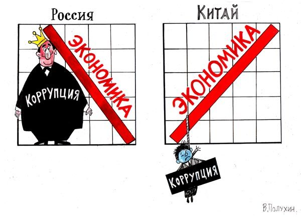

Андрей Борцов (Warrax)
Социализм без ярлыков: Китай
|
«Каждый народ имеет
свой собственный социализм» Артур Мюллер ван ден
Брук |
В предыдущих частях исследования были разобраны Советский Союз и Третий Рейх. Разумеется, не исчерпывающе — для этого надо писать многотомные монографии, но достаточно для цели «понять многообразие социализма».
Сейчас же мы займемся Китаем. Для кого-то это самоочевидно: нет сейчас более национал-социалистического государства, чем Китай; а у кого-то возникнет удивление: а какое отношение к социализму, кроме декларации строя, имеет Китай? Мол, там давно уже не социализм, а непонятно что!
Вот в этом — в частности — и будем разбираться.
Несколько забегая вперед, скажу, почему так много пересудов на тему Китая. Все просто: именно Китай сейчас развивается такими темпами, что претендентам на однополярный мир становится явно не по себе. И они понимают, что такие темпы — это именно результат национальной и социалистической политики. История же сохранила сведения о невиданных для капитализма темпах развития в национал-социалистическом Рейхе и социалистическом Советском Союзе, поэтому понятно кто отнюдь не хочет, чтобы возникло четкое понимание «социализм — путь к развитию и процветанию». Именно поэтому успехи Китая пытаются принизить, зашельмовать, объявить мифами…
Давайте для начала рассмотрим .именно мифы.
Воспользуюсь материалами Александра Николаевича Анисимова, выдающегося экономиста еще советской закалки, доктора экономических наук, специалиста по сравнительным оценкам статистических моделей различных стран мира, который в своих публикациях много уделяет Китаю значительное место. В частности, советую работу «Китайский противовес США: мифы и реальность (Китайская мощь сегодня и завтра)»
Миф первый: импорт капитала
Миф крайне незатейлив: мол, сами китайцы не смогли бы развиться никогда и ни за что, всё — исключительно следствие иностранных капиталовложений.
Обратите внимание: параллельно с мемом «Китай на самом деле не крут» проталкивается мем «берите у нас кредиты, и вы тоже будете в шоколаде».
Но давайте посмотрим на действительность: сделали иностранные капиталисты КНР великой экономической державой или же нет?
Смотрим данные на 2005 г. согласно сообщению ГСУ КНР об итогах экономического и социального развития страны в 2005 г. — «Жэньминь жибао», 28/02/2006
Прямые зарубежные инвестиции в экономику КНР в 2005 г. составляют 60,3 млрд. долларов, что составляет по курсу около 500 млрд. юаней. А капиталовложения в основные фонды экономики КНР в целом в 2005 г. — 8860 млрд. юаней, из которых 4005 млрд. юаней инвестиции в госсектор.
Но тут важно учитывать несоответствие официального курса и реальной покупательной способности юаня. Дело в том, что в 1994 году китайские власти законсервировали курс на уровне $1/8,28 юаня. А еще в 2003 году по оценке Мирового банка покупательная способность юаня составляла приблизительно $1/1,8 юаня (приношу извинения — более свежие данные не нашел, но, если учитывать, что экономика Китая стабильно развивается, то сейчас всё еще лучше — для китайцев). Между прочим, 21 июля 2005 Китай отказался от привязки юаня к доллару и поднял курс национальной валюты на 2%. Курс юаня теперь определяется исходя из его отношения к корзине из нескольких валют.
Так вот, по данным Анисимова, если оценивать размеры капиталовложений в экономику КНР, не по курсу, а по паритету покупательной способности юаня, который составляет примерно 55 центов, получается гораздо интереснее.
Все капиталовложения в экономику КНР в 2005 г. составляют 5 трлн. долларов США, в том числе капиталовложения в госсектор — 2,2 трлн. долларов, а прямые зарубежные инвестиции — только 60 млрд. долларов. 1.2% — впечатляет, да?
И не забывайте, что все капиталовложения так называемых развитых стран в собственную экономику в 2005 г. — это немногим более 4 трлн. долларов.
Но всякие дутые показатели типа ВВП и проч. не дают реальной картины состояния экономики. Сейчас это наглядно демонстрирует мировой банковский кризис. Вот представьте, что по щучьему велению исчезли все бумажные деньги, акции и прочие ценные бумаги, — осталось лишь материальное: заводы, природные ресурсы, товары и т.д.
Объем капиталовложений в экономику любой страны прямо и непосредственно отражается показателями потребления цемента («хлеба» строительства) и металлопроката. Это требуется везде — от жилья и до заводов.
Так вот, в 2000 г. экономика КНР потребила, по прямым данным ГСУ КНР, 400 млн. т проката и 1050 млн. т цемента. А экономика развитых стран вместе взятых потребила в 2005 г. около 350 млн. т проката и меньше 400 млн. т цемента. Наглядная демонстрация «преимущества» высоколиберализованной экономики перед экономикой смешанного типа (не забываем, что социализм — это отнюдь не «переходная стадия к коммунизму», а отдельная социальная система).
Ну и последнее: иностранные капиталовложения в КНР на 40% — это капиталовложения инвесторов из Гонконга, причем примерно на 80% — капиталовложения этнических китайцев.
Вот такой национальный социализм — наглядно и поучительно.
Миф второй: экспортно-ориентированная экономика
Тезис прост: всем известно, что китайские товары продаются повсеместно; что будут делать китайцы, если не будет экспортного рынка сбыта?
Да ничего особенного не будет. Да, верно, китайский экспорт огромен. В 2005 г. — 762 млрд. долларов при импорте в 660 млрд. долларов.
Сальдо экспорта и импорта в 2005 г. — 100 млрд. долларов, и уж сейчас китайский импорт высокотехнологичных продукции уравновешивается ее экспортом.
Капиталовложения в экономику КНР в долларовом исчислении, считая по паритету покупательной способности юаня, в 2005 г. почти в 7 раз превышали экспорт.
Да — Китай, на данный момент, видимо, крупнейший мировой экспортер (и уж точно в первой тройке), но из этого вовсе не следует, что его экономика экспортно-ориентированнная. Она характеризуется высоким уровнем развития практически всех отраслей промышленности и самообеспечивается продовольствием и потребительскими товарами.
Куда интереснее представит, что будет с теми же США, если они перестанут покупать товары Китая — производство-то большей частью вывезено.
Так что России — срочно учиться у Китая, так как у нас именно что нормальная экономика превращена в экспортно-ориентированную, да еще и сырьевую.
Миф третий: зависимость от импорта нефти
Что, мол, произойдет с экономикой КНР, если начнется война в заливе?
Ответ прост — ничего существенного. На сырую нефть и импортированные нефтепродукты в 2004 г. приходилось лишь 22,7% всего энергопотребления КНР, из которых около половины обеспечивалась за счет импорта нефти и нефтепродуктов.
Кроме того, еще в 1977 г., согласно заявлению тогдашнего министра нефтяной и химической промышленности Кан Шиэня, предполагалось «перегнать США в недалеком будущем по уровню развития нефтяной промышленности».
И, хотя статистика скромно молчит, фактическое потребление электроэнергиии нефтегазодобывающей промышленностью КНР в 2003 г. (35 мрд. квтч) соответствует уровню нефтедобычи минимум в 500 млн. т., при официальном уровне 170 млн.т.
Интересно, не так ли?
De facto фактическая добыча нефти в КНР в несколько раз превышает заявленную официально. Китайцы — они хитрые.
Кроме того, зависимость от нефти — это шаблон. Для экономики КНР важно не то, сколько конкретно нефти добывает китайская нефтепромышленность, а то, что экономика Китая является единственной в мире крупной экономикой, энергетика которой базируется на угле, а в области добычи угля лимит у КНР практически отсутствует.
Так что в области энергоносителей у Китая всегда есть автаркия в запасе.
Миф четвертый: ВВП как показатель
ВВП — вообще достаточно дутый показатель, отражающий больше виртуальную, а не реальную экономику. Не может быть безразлично, потреблено ли услуг на некую сумму или же на эту сумму выпущены танки.
Очень наглядно это иллюстрируется именно на примере Китая.
Те, кто при сопоставления экономических возможностей КНР и США базируется на данных о ВВП КНР, пересчитанных в доллары по курсу, радуется превосходству США.
Фактически же экономика КНР потребляет в 3 с лишним раза больше проката, в 8 раз цемента и производит в 2 раза больше мяса. Промышленность США превосходит промышленность КНР лишь по очень ограниченному числу позиций — производство пиломатериалов, нефтепродуктов, нефтехимической продукции, автомобилей и самолетов и вертолетов гражданского назначения.
По производству электронной продукции КНР уже обошла США (производство микрокомпьютеров в КНР в 2005 г. достигло в КНР 80 млн. ед. и в несколько раз превысило уровень США). Зато, если делить официальный юаневый ВВП (в 2005 г. 18,23 трлн. юаней) на курс юаня, то получается, что ВВП юаня около 2,3 трлн. долл., а у США он в 5 раз больше. Вот, мол, и доказали экономическое превосходство США.
А если учитывать паритет покупательной способности юаня, что при сопоставлениях ВВП принято давно уже во всем мире (регулярно такие данные публикуются и Российской статистической службой), то для КНР этот паритет ссоставялет 50-55 центов за юань (2005 г).
Так что долларовый эквивалент официального ВВП КНР в 2005 г. 9-10 трлн. долларов, что почти соответствует ВВП США. Причем речь идет об официальном ВВП. Реальный же ВВП КНР, с учетом теневых компонент различного происхождения, много больше номинального. Экономика китайцев — отнюдь не «прозрачна».
Слабости КНР
Не буду запугивать читателя. Разумеется, у Китая есть и слабые места, что не может не радовать.
Реформа была вызвана в Китае стремлением элиты потреблять — стандартное, кстати говоря, начало конца для государства. Но в данном случае есть компенсация национальными особенностями.
Поскольку инвестиционная перегрузка экономики сохранилась, увеличение потребления элитой было достигнуто за счет уменьшения доли массы рядовых членов общества и, в конечном счете, за счет возникновение феномена, как выражаются некоторые специалисты в Китае, «расколотого общества». Развернулся процесс вторичного классообразования. Общество оказалось расщепленным по вертикали.
Ничего нового — то же самое характерно и для РФ.
Но есть и отличие: в отличие от россиянской ситуации.
Экономика Китая имеет ярко выраженный многоукладный характер, причем имеется тенденция привязки конкретных укладных систем к определенному территориальному базису.
Сначала, в момент выдвижения принципа «одна страна — две системы» предполагалось, что он будет реализован после воссоединения Тайваня: таковой в основном сохранит свою социально-экономическую систему, континентальный же Китай — свою.
На практике же принципе системного социального полиморфизма реализовался в Китае до воссоединения с Тайванем. Фактически еще 6 лет назад, по состоянию на конец минувшего столетия, в пределах государственной территории КНР сформировалось не две, а несколько укладных систем с выраженным социально-экономическим своеобразием. А именно:
1) Гонконг;
2) система в виде 14 «открытых» приморских городов и свободных экономических зон;
3) система приморских провинций с значительной степенью экономической либерализованности и повышенным удельным весом в экономике иностранного капитала;
4) система внутренних провинций с пониженной степенью либерализованности экономики.
Китай раскололся на «капиталистические», «полукапиталистические», «полусоциалистические» провинции и им эквивалентные административно-территориальные образования.
Впрочем, тут не надо радоваться: это не значит, что у Китая есть тенденции к распаду, что было бы верно для европейского государства в аналогичном случае.
А.Н. Анисимов отмечает: «Первичной социально-экономической единицей в Китае является не провинция и не более крупное экономическое образование типа районов экономического кооперирования, как-то Северо-Восточный или Восточный Китай, а округ с центром в виде крупного или среднего города. В 2005 г. такого рода парцелл имелось 283 ед. из общего числа округов в 333 ед. Именно такова традиционная китайская форма организации социально-экономического и политического пространства. В Сунском Китае, в период предшествовавший его завоеванию монголами, имелось, согласно запискам Марко Поло, 1200 таких парцелл, включающих город и прилегающие к нему сельские районы. В известном смысле Китай сегодня представляет собой федерацию 283 территориально-экономических парцелл с центрами в виде крупных и средних городов. Численность населения, в каждой такой парцелле в среднем в 2-3 раза больше, чем в российском регионе и примерно такова, какой она была в американских штатах в 30-е годы.
Китай не распадается и не распадется при более или менее искусном руководстве именно потому, что экономическая и политическая власть распределена сразу между провинциями и округами, а в округах — также между уездами и волостями. На каждом уровне имеется свой ресурс власти. Отделенческие тенденции на уровне провинций при такого рода системе могут представлять реальную опасность только тогда, когда провинциальное руководство пользуется полной поддержкой окружных руководителей. А это практически исключено, так как каждая территориальная парцелла окружного уровня в китайских условиях располагает характеризующимся существенной независимостью от внешних связей аграрно-промышленным комплексом и значительными ресурсами экономического суверенитета.
Общий принцип функционирования такого рода системы — устойчивость в условиях нестабильности или благодаря нестабильности.»
Дополнительно к аргументам Анисимова добавлю многовековой государственный национализм китайцев — стремление к единению нации в одно государство имелось всегда.
Конечно, мощные социальные движения в состоянии взорвать устойчивость этой конструкции. Поскольку «либерализация без берегов» в условиях ограниченных затрат на социального характера (здравоохранение, образование, пенсионное обеспечение) и напряженной ситуации на рынке труда в состоянии создать такие движения, она в условиях современной КНР имеет свои естественные пределы, Чем меньше социальные затраты, тем меньше оптимальный уровень либерализованности и соответственно приватизированности экономики.
Еще один аспект ситуации — население Китая характеризуется очень высокой способностью к самоорганизации и потенциальная его способность реагировать на неблагоприятные жизненные условия и даже просто на феномен расщепления общества по горизонтали очень велика.
С другой стороны, азиаты без гуманистической трепетности относятся к силовым методам подавления недовольных, даже в оптовых масштабах.
Кроме того, речь идет лишь о том, что в такой ситуации углубление степени экономической либерализации без крупного увеличения затрат социального характера (что само по себе являлось бы фактом компенсационной делиберализации) невозможно, и либерализация экономики и общества в Китае имеет свои пределы. Пожалуй, уже достигнутые. Но это означает именно что сохранение социализма!
Конечно, вступление Китая в ВТО было рискованным шагом. Этот шаг отвечает интересам элиты Шанхая и второго центра экономического либерализма в КНР — Гуандуна (столица Гуанчжоу), но не интересам большей части китайских экономических и политических элит и, тем более, рядового населения.
Условием членства в ВТО, естественно, является открытый рынок: никаких препятствий для перемещения товаров и услуг.
Но для Китая характерно наличие местного протекционизма на любом уровне. Составляющие экономическую конструкцию Китая парцеллы провинциального и окружного и даже уездного масщтаба проявляют тенденцию защищать свои рынки и своих производителей от конкурентов из других провинций и округов Китая. Что уж тут говорить о конкурентах из других стран?
Китайцы — не законопослушные до идиотизма европейцы и не антирусская администрация РФ. Китайцы, извлекая пользу от ВТО, будут улыбчиво кивать, как китайские болванчики, на требования привести законодательство в соответствие с ВТО — и по объективным, так сказать, причинам процесс затянется на столько, сколько правительство КНР сочтет нужным.
Китайская «открытость рынка»
Некогда я уже цитировал по несколько другому поводу Андрея Девятова («финансовый ключ к успеху Китая»), разберем вопрос подробнее (цитаты Девятова не проставляю явно, т.к. перемешиваю со своими комментариями).
Специфика китайской «открытости» удивительно проста. Она лучше всего видна на примере финансовой политики реформ. А суть ее в том, что в китайской экономической модели доминирует исключительно национальный интерес. Уступки требованиям извне — вынужденные, а отнюдь не вызванные стремлением к рыночному хозяйству западного образца. Китайская открытость — дверь, ведущая только вовнутрь. По сути — это закрытость китайского рынка от западного «рынка без границ».
Обратите внимание — социализм как таковой не отрицает рынок; это относится лишь к марксизму. Я уже рассматривал вопрос «Рынок и национализм» в одноименной статье — и, как вы знаете, истинный национализм не может существовать без социализма.
В Китае поощряется конвертация доллара в юань, конвертировать юань в доллар куда сложнее. Полной конвертируемости юаня нет (это важно), государством обеспечивается лишь обратимость юаня по текущим счетам. Сравните с ситуацией начала «реформ» в России. В общем виде: национальное государство не должно иметь в качестве второй (а то и основной) валюты иностранную. И сейчас радует то, что в РФ поднимается вопрос о ведении торговли нефтью за рубли.
Ввоз валюты и капитала (налоговые льготы) в Китай не ограничен, а вывоз валюты за границу частными физическими и юридическими лицами затруднен многоступенчатой процедурой разрешений и строго контролируется банками и таможней.
Во внешней торговле поддерживается полный контроль за коммерческой и банковской тайной, что осуществляется через структуру квотирования и лицензирования Министерством внешнеэкономических связей и управлением валютного регулирования. Разрешается оплата валютой только планового импорта.
Опять же — приснопамятный социалистический контроль в действии.
Китайские внешнеторговые компании должны перекрывать разрешенный им валютный импорт экспортом китайских товаров. Где только удается — в оплату импорта иностранцам зачисляется не валюта, а неконвертируемые юани, на которые те по своему выбору закупают и вывозят китайский товар.
Национализм подразумевает протекционизм для своих, в том числе и на рынке. Так, в Китае фондовый рынок разграничен на две части, на главную из которых иностранные инвесторы не допускаются. По объему капитализации соотношение между двумя рынками акций — только для китайских инвесторов и только для иностранных инвесторов — составляет 9:1.
Для России одной из важнейших проблем является утечка капитала за границу. В Китае такое исключено. Даже иностранный инвестор, вложивший в производство деньги, машины, оборудование, технологии, возврат капитала и прибыль может иметь только в виде произведенного товара. Причем по закону о предприятиях с участием иностранного капитала 70% товаров должны обязательно вывозиться из Китая и только 30% можно продать за юани на внутреннем китайском рынке. Таким образом, за рубеж отправляется в основном возобновляемый ресурс овеществленного труда нынешнего поколения китайских рабочих, а факторы стоимости производства — производственный капитал, возмещение его убыли от амортизации и накопление — остаются в Китае. Мудро, не так ли?
Глядя на вывески магазинов и торговые марки международных компаний, написанные по-английски, может показаться, что в Китае много импортных иностранных товаров, функционируют многочисленные иностранные предприятия и банки. На деле же в Китае подавляющее большинство товара сделано на месте китайцами на китайских предприятиях с участием иностранного капитала или без оного, беззастенчивым копированием иностранных моделей и зачастую «пиратским» использованием иностранных торговых марок. А иностранные банки имеют в Китае только свои представительства для ускорения и отслеживания операций по платежам международной торговли и внешнеэкономических связей. Все же расчеты и платежи в Китае проводятся только в китайских юанях (народных деньгах, в отличие от тех конвертируемых китайских юаней, которые ходят на Тайване). Юридических и физических лиц в КНР обслуживают только китайские банки, при этом 70% банковской системы Китая контролируют четыре государственных банка, а финансовая сфера в целом, наверное, на 90% остается сегодня в руках государства.
Социализм с китайской спецификой осуществляет не только полное валютное регулирование в стране, но и через это регулирование обеспечивает полную гарантию валютных и юаниевых вкладов населения. За 20 лет реформ власть народ пока ни разу не обманула. Защитив сбережения населения от обесценивания, китайское государство сумело тем самым создать условия для накопления финансовых средств, необходимых для зарождения и развития частного бизнеса. Из сбережений граждан, то есть из внутренних ресурсов, осуществлялось и кредитование реформ (при этом государство брало на себя возмещение рисков безвозвратных кредитов, достигающих в Китае 20 -25%, при критической норме западного рынка 8%).
Граждане КНР имеют полное право свободно получать доллары из-за границы (или доставать их где получится), хранить валюту на личных банковских счетах, а при надобности отдавать ее насовсем государству, обменивая на народные юани. А вот свободно менять юани на доллары китайское государство не разрешает, и тем самым многие годы оберегает свою экономику и жизненный уровень граждан от бурной инфляции. Таким путем социализм с китайской спецификой не позволяет США сливать свою американскую инфляцию в Китай в форме виртуальной стоимости портретов на зеленых бумажках, но собирает эти зеленые бумажки у граждан и компаний и возвращает их обратно за границу в форме платежей за реальные импортируемые товары. Подрабатывающие в Китае иностранцы (кроме сотрудников иностранных представительств, денежное содержание которых в валюте поступает из-за рубежа), как и китайцы, получают вознаграждение в юанях. Тащить заработанные народные юани на Родину не имеет смысла, и они должны либо легально потратить их в Китае и вывозить товары, либо менять значительную часть юаней на черном рынке на доллары, рискуя получить «куклу» — официальных пунктов свободного обмена валюты нет.
Или вот, наглядный пример, как национальный и социалистический не-догматический подход работает — с очень высокой эффективностью.
Гонконг — седьмой в мире по грузообороту морской порт и крупнейший финансовый центр Азии, еще с 1951 года, когда ООН из-за войны в Корее наложило эмбарго на торговлю с Китаем, выполняет функцию «уполномоченного посредника» КНР в торговле, инвестировании и обмене технологиями с заграницей. Около половины китайского внешнеторгового товарооборота и валютных платежей проходят через Гонконг.
На секунду отвлечемся: это, кстати, о стандартном жупеле «а если России США и т.п. объявит эмбарго».
Так вот, китайские власти перед возвращением Гонконга Китаю в плановом порядке долгие годы (чуть ли не десять лет) медленно и плавно снижали курс юаня к доллару США почти ровно до курса обмена гонконгского доллара на американский доллар. Начиная с 1995 года, за 100 гонконгских долларов китайцы дают 106-108 народных юаней. Финансовая связка континентального Китая и его особого административного района — Гонконга — за счет национально-патриотической (а не конъюнктурно рыночной) поддержки друг друга, сообщаясь, но не перемешиваясь, успешно и стабильно удерживает почти одинаковый уровень котировки и огромной неконвертируемой массы народного юаня и весьма ограниченной массы полностью конвертируемого гонконгского доллара под самыми жесткими ударами мирового рынка, финансовых спекулянтов и т.д.
Внутренний, неконвертируемый юань, в котором исчисляется стоимость всей огромной массы реальных китайских экспортных товаров, проходящих через Гонконг, опирается на монолит всего достояния народной республики. А гонконгский доллар, обслуживающий «город-государство», непоколебимо держится на плаву в мировой валютной системе, так как жестко привязан к доллару США, на котором она основана и в котором исчислены громадные активы мировых банков, квартирующих в Гонконге (в 2000 году валютные резервы Гонконга составляли порядка 100 млрд. долл. США). И какими бы дутыми в условиях постоянной инфляции в КНР и все большего пузыря виртуальных активов мировых банков в Гонконге на самом деле не были бы эти котировки, обрушить их извне очень трудно, ибо для этого нужно, чтобы одновременно расшатались сразу оба устоя финансовой связки, что маловероятно.
Результат китайской «открытости только вовнутрь» Китая выражается в накоплении государством валютных резервов, экономической независимости страны, возможности регулировать внутренние цены и сдерживать инфляцию (что трудно, так как с реформами идет неизбежный рост городского населения, стоимость жизни которого в городах приходится дотировать).
Китайскую специфику в финансах можно было бы с пользой применять и в России — в ней нет ничего уникально китайского, нужно лишь российскую дверь в мировой рынок, открытую в обе стороны, свободно открывать только вовнутрь. Просто, не так ли?
Кремль бы мог использовать часть китайского опыта. Пользуясь обстоятельством значительного превышения российского экспорта (главным образом — промышленного сырья и энергоносителей) над импортом, не объявляя рубль свободно конвертируемым, можно перевести весь российский экспорт в расчет на рубли. Для этого в обязательном и сейчас паспорте сделки цену товара, вывозимого из России, достаточно исчислять не в долларах США, а в рублях. То есть экспортные сделки исчислять в российской национальной валюте, заставляя иностранного покупателя российского сырья расплачиваться с российскими компаниями рублями, и для этого сначала покупать в российских банках рубли за свою иностранную валюту. Покупку сделать двухступенчатой. На первой — под конкретный товар продать «деревянные» рубли, эмиссия которых плановая (государство всегда способно поддерживать и регулировать дефицит рублей для иностранных покупателей), на второй — за рубли продать товар, предложение и спрос на который могут определяться и свободным рынком. Приток валюты в Россию при этом не уменьшится, а курс рубля будет расти до его реальной рыночной котировки. А с ростом рубля повысится покупательная способность зарплаты трудящихся России, да и бегство капитала из России станет невыгодным. Российские банки станут оборачивать рубль и накапливать иностранную валюту, появится внутренний источник кредитования модернизации российского производства. И это только минимальное использование китайского опыта, практически лежащего в рамках либерализма.
Между прочим, А.Девятов писал на эту тему еще в 2000 году, но актуально до сих пор. И будет актуально далее — пока правительство не станет заботиться о стране, а не просто ее администрировать на благо заокеанских хозяев.
Китайский социализм
Очевидные успехи китайского национального национализма, понятно, вызывают стремление заявить, что-де в Китае вовсе не социализм. Социализм не должен быть привлекательным, нельзя сознаваться, что капитализму и либерализму есть альтернатива!
Предлагаю подумать.
Рассуждая о социализме в Китае, нельзя забывать, что есть очень много, скажем так, влиятельных людей, которым критически важно, чтобы все думали, что в Китае нет социализма, что у рабочих нет альтернативы в реальном мире и нет надежды, кроме как приспособиться к существующему капиталистическому обществу и добиться персонального успеха в рамках существующей социально-экономической системы.
Что характерно — людей, материально заинтересованных в обратном, нет.
Так что «черный пиар» китайского социализма выгоден сами знаете кому.
Но давайте рассмотрим обвинения.
Скажем, Гэс Холл, председатель Коммунистической партии США, изложил свою позицию в статье «Марксизм–ленинизм — наука нашего времени». Статья опубликована в теоретическом журнале КП США «Политикал Афферс».
В статье Гэс Холл обращается не только к американским коммунистам, а ко всем соратникам по международному коммунистическому движению с предупреждением о чрезвычайной опасности очередного перерождения коммунистического движения — на этот раз в Китае.
Помните, когда начались первые крики о «перерождении»? Правильно, когда троцкисты требовали «мировой пролетарской революции» за счет русского народа, а Сталин стоял на государтсвеннической позиции построения социализма в отдельно взятой стране.
Гэс Холл пишет:
«Китай также ощущает на себе влияние мирового кризиса. Кризисы в других азиатских странах оказывают влияние на Китай. Мы должны теперь сказать о том, что Китай, кажется, попадает, в ту же ловушку. Китайский так называемый “рыночный социализм” является только прикрытием для перехода на капиталистический путь. В какой мере Китай пошел на уступки приватизации и капитализму и насколько он еще остается социалистическим — неясно.»
«Можно вспомнить известное выражение отца китайских экономических преобразований Дэн Сяопина про то, что не важно, какого цвета кошка: главное, чтобы она хорошо ловила мышей… Китай, однозначно, строит капитализм. Но под руководством коммунистической партии».
Строительство капитализма под руководством коммунистической партии?
Оригинальное такое обвинение — мол, этот мужик такой гад, такой гад — во-первых, «голубой», во-вторых, импотент, а в-третьих, переспал со всеми бабами в подъезде.
Пока не будем обсуждать коммунизм — обсудим именно социализм. Противоречит ли социализму реформы китайской экономики?
Вводя рыночные элементы, руководство КНР стремится не допустить рыночного произвола.
Так как развитие рыночных отношений порождает известные злоупотребления, в КПК внимательно за этим следят и — принимают меры. Суровые, вплоть до высшей меры социальной защиты.
Еще в речи Цзян Цзэмина на торжественном собрании 1 июля 2001 года по случаю 80-й годовщины со дня создания КПК тезисы многоукладной экономики нашли свое дальнейшее развитие и углубление.
Китайцы не стесняются заявлять о своем специфическом пути, они не равняются на догматические авторитеты — того же Маркса.
В основе всех нынешних преобразований в КНР лежит теория Дэн Сяопина о строительстве социализма с китайской спецификой, принятая XV съездом КПК в качестве официальной руководящей идеологии партии.
В основе китайских экономических реформ лежат два принципа:
1) Все реформы должны проводиться в интересах абсолютного большинства населения, которое должно иметь очевидную выгоду от этого.
2) Для абсолютного большинства населения цена реформ должна быть приемлемой.
Обратите внимание — принципы именно что социалистические, а не капиталистические и либеральные.
Так что говорить о «перерождении» могут лишь догматики-марксисты и современные троцкисты, которые давно уже работают именно на капитал, агитируя народные социалистические движения в сторону неизбежного самоуничтожения.
Китайцы не боятся прямо отрицать антагонизм между социализмом и рынком в своей стране, также отрицаются противоречия между формами собственности, между трудом и капиталом. Частная собственность уравнена в правах с государственной, которая может определенной частью включаться в состав коллективной и акционерной.
Опять же, не вижу никакого «перерождения».
Ну и как всегда — qui prodest? Кому выгодно, чтобы социализм в современном мире понимался лишь догматически и не мог содержать рыночные отношения в некоей пропорции?
Мол, социализм — это СССР (вместе с сателлитами) и Рейх, которые проиграли, а вы же не хотите проиграть? А в Китае — вы слышите только мой голос — не социализм, ни в коем случае не социализм, не может быть социализм, социализм нельзя допустить…
Правящая партия Китая выдвигает лозунг: «собственность, которая помогает развитию Китая, — это собственность, а та, которая мешает, — не собственность.» Все, что содействует развитию производительных сил, — это хорошо, а все, что мешает, — плохо.
Ничего не напоминает?
«Когда Штрассер задал Гитлеру вопрос, национализирует ли он, придя к власти, заводы Круппа, вождь ответил:
— Вы думаете, что я сошел с ума и что я собираюсь разрушить германскую промышленность? Мы должны будем вмешаться в управление крупными предприятиями лишь в том случае, если их владельцы откажутся действовать в интересах национального государства. Но для этого вовсе не надо конфисковать предприятия или делать государство участником в их управлении. Сильное государство может обойтись без подобных мероприятий. Предприниматель, ответственный за производство, дает заработок рабочим. На чем вы основываетесь, требуя, чтобы он делал рабочих участниками в своих прибылях и в руководстве предприятиями? Вы хотите посадить ему на шею чиновника или заводской комитет, ничего не смыслящие в производстве? Ни один предприниматель не подчинится подобной мере.
Когда же Штрассер возразил, что в таком случае название партии “национал-социалистическая” может ввести в заблуждение народные массы, Гитлер заметил:
— Название “социалистическая” неудачно. Во всяком случае, оно означает не то, что мы должны социализировать предприятие, а только то, что мы можем это сделать, если их владельцы будут действовать во вред интересам нации. В настоящее время они этого не делают, а потому было бы преступлением разрушать народное хозяйство».
Вся разница в том, что в Рейхе изначально были капиталистические предприятия, и надо было нациоанализировать те из них, чьи хозяева не поддерживали государственную политику, а в Китае — наоборот, были изначально государственные предприятия, и были разрешены частные при условии их работы на благо Китая.
Актуальный лозунг КПК: «все лучшее из социализма и капитализма — в экономику страны».
Капиталист, частник — тоже строитель социализма (с китайской спецификой), а поэтому имеют равные права с другими гражданами, а так же быть членами правящей Компартии Китая.
Национальной идеей Китая провозглашено величие страны и нации — возражения есть? Это и есть национальный социализм!
Лозунг классовой борьбы был снят как потерявший актуальность. Именно так и должно быть: нет «классовых противоречий» внутри нации, есть противоречия между, условно говоря, трудящимися и спекулянтами, причем эти страты не соответствуют классическим «классам». Предприниматель вполне может быть тружеником, если он ставит прибыль не самоцелью, а средством (упрощенно).
Ден Сяопин, который начал долгий марш к рыночному социализму, в 1985 году говорил:
«Материк будет поддерживать социалистическую систему и не свернет на ложный путь — путь к капитализму. Одна из особенностей, отличающих социализм от капитализма — то, что социализм, означает общее процветание, а не поляризацию доходов. Созданное богатство принадлежит сначала государству, а затем людям; поэтому появление новой буржуазии невозможно. Прибыль, поступающая государству, будет потрачена на благо людей, малая часть на укрепление национальной обороны, а остальное — на развитие экономики, образования и науки и подъем жизненного и культурного уровня людей.» (Ден Сяопин, Избранное, т. III)
Ортодоксы могут возмущаться, что-де китайское правительство никогда не защищало капитализм, только «свободный рынок» — мол, стремятся вывернуться!
Но рынок-то, как уже показано — отнюдь не свободный, а социалистический.
ККонечно, сейчас есть поляризация доходов; но вполне себе в рамках, под надзором, и при этом стратегически работает именно на общее китайское процветание.
Еще цитаты из Дена Сяопина (Избранное, т. III):
«В ходе реформы для нас очень важно поддерживать нашу социалистическую ориентацию. Мы пробуем достигнуть модернизации в промышленности, сельском хозяйстве, национальной обороне, науке и технике. Но перед словом „модернизация” уточним, „социалистическая”, совершить „четыре социалистических модернизации”. Политика подбадривания нашей внутренней экономики и открытости внешнему миру выполняется в соответствии с принципами социализма. Социализм имеет два главных требования. Во-первых, его экономика должна быть в государственной собственности, и во-вторых, не должно быть никакой поляризации.» /p>
«Относительно требования отсутствия поляризации, мы серьезно обдумали этот вопрос в ходе формулировки и осуществления нашей политики. Если есть поляризация, реформа будет неудачна. Возможно ли, что появится новая буржуазия? Горстка буржуазных элементов может появиться, но они не создадут класса.»
«Короче говоря, наша реформа требует, чтобы мы сохраняли преобладание государственной собственности и принимали меры против поляризации. За прошлые четыре года мы сохраняли этот курс. Значит, мы сохраняли социализм.»
На мой взгляд — четко и ясно.
Проблемы теории и практики управления
Но ладно, давайте еще подробнее, и заслушаем разъяснения
Китая.
Чжоу Синьчэн, директор Института Восточной Европы и Средней Азии Народного
университета Китая (Пекин):
«• Цель реформы — создание социалистической рыночной экономической системы с китайской спецификой
• Перенеся центр тяжести на косвенные рычаги, государство не должно ослаблять макроэкономическое регулирование
• При многоукладности хозяйства общественная форма собственности остается господствующей
• Механизм рыночной экономики в КНР будет в основном создан к концу XX в.»
ТТезисы относятся к 97-му году. Я цитирую столь давний документ именно потому, что объяснения давались сразу же — китайцы маскируют свои экономические ресурсы и достижения, но идеологическую основу всегда поясняют «наружу». Так вот: объяснения даны давно, а обвинения — а не контраргументы! — слышатся до сих пор. Наглядно: идеологических противников китайского пути развития интересуют не факты и эффективность пути Китая, а лишь стремление недопустить восприятия Китая как примера для подражания — в этом случае гегемонии капитала (во главе с Америкой) наступит конец.
«Чтобы понять суть китайской реформы, надо усвоить, что социалистический строй и социалистическая экономическая система — разные вещи. Реформа требует коренного изменения не социалистического строя, а старой экономической системы . Это значит, что, во-первых, нельзя ставить целью преобразований ликвидацию социалистического строя, во-вторых, объектом реформы должна стать высокоцентрализованная плановая экономическая система. При этом нельзя ограничиваться ее чисто внешними изменениями и дополнениями, необходимо радикально преобразовать саму модель экономической системы и базисный механизм хозяйствования, т.е. осуществить определенный переход от плановой экономики к рыночной./p>
ДДолгое время в Китае видели в рыночной экономике отличительную черту капитализма, а в плановой — главную характеристику социализма. Практика, однако, показала, что план и рынок — лишь средства для экономического регулирования, что рыночная экономика подходит и социализму».
«Рыночное регулирование носит двойственный характер: с одной стороны, рынок реагирует на экономические сигналы быстрее, чем план, что полезно для своевременной ориентации производства, с другой — рыночное регулирование отличается стихийностью и может принести негативный эффект. Поэтому нельзя ослаблять макроэкономический контроль государства, необходимо его всемерно совершенствовать . Государству следует создавать все условия для укрепления единого рынка внутри страны и его здорового развития./p>
Социалистическая рыночная экономическая система неотделима от социалистического строя. В структуре собственности общественная ее форма, включающая общенародную и коллективную, должна занимать господствующее место, частная же, в том числе с иностранным участием, должна иметь дополнительный статус. Государственным предприятиям предстоит выйти на рынок через равноправную конкуренцию и защищать свое доминирующее положение в экономике.
Принцип распределения по труду останется главной формой распределения. В то же время допускаются и другие формы, дополняющие его. В распределении прежде всего следует руководствоваться принципами эффективности и справедливости. Доходы должны быть дифференцированы с целью поощрения наиболее активных работников и стимулирования роста эффективности. Вместе с тем необходимо сдерживать тенденцию к социальному расслоению общества и стремиться к всеобщему благосостоянию.
ППри макроэкономическом контроле следует своевременно учитывать интересы текущие и перспективные, локальные и общенародные. Нужно одновременно использовать различные экономические и административные методы регулирования. Проводить реформу необходимо постепенно, поэтапно, планомерно и комплексно. Нельзя надеяться на быстрый результат и опережать исторический ход развития. Прежде чем воплотить какую-то идею в жизнь, нужно разработать комплексный план, внедрить его на небольшой территории и проверить на практике. Только при положительных результатах возможно его широкое распространение».
Как видите — концепция обоснована, стройна и осторожна. Никаких россиянских метаний, именно что постепенно пробовать — и внедрять реально работающее./p>
Роль государственного регулирования
АА по этому вопросу ознакомимся с тезисами Ли Цзиньвэня, заведующего отделением Секции экономики Академии общественных наук КНР, иностранного члена Российской академии наук.
В условиях социалистической рыночной системы хозяйственные функции государства воплощаются в политике макроэкономического регулирования. Для этого существует ряд важных причин.
Во-первых, необходимость компенсировать изъяны и слабости рынка . Как в условиях капитализма, так и при социализме рынок никогда не бывает всесильным в решении многих жизненно важных вопросов, в частности, касающихся экологии, социальной справедливости, образования и всестороннего развития личности. Опора исключительно на рынок может привести к негативным результатам в этих сферах. Ведь успехи здесь служат интересам общества в целом. Это далеко не всегда могут обеспечить индивидуум или предприятие. /p>
Кроме того, рыночное регулирование через цены темпов роста и структуры экономики обычно происходит замедленно и стихийно. К тому же предприятие и индивидуум обычно не владеют полной информацией, в результате чего микроэкономическая политика отличается определенной бесплановостью. Это особенно заметно в отраслях с растянутым циклом производства (сельское хозяйство, горнодобывающие отрасли и т.д.). Поэтому наряду с более эффективным распределением богатства, затруднено поддержание баланса спроса и предложения и обеспечение стабильного роста.
Опираясь только на рыночный механизм, невозможно осуществить справедливое распределение доходов. Хотя рыночный обмен и ведется по принципу эквивалентности, возможности у людей различны и доходы их вследствие этого заметно разнятся. Неограниченное действие рыночных механизмов неизбежно ведет к социальной поляризации, безработице и социальной напряженности.
Во-вторых, потребность в урегулировании отношений между макро- и микроэкономикой, целым и частным, центром и местами . Экономическая деятельность отдельно взятого предприятия, отрасли или региона ведется по принципу рассредоточения ответственности, самостоятельного хозяйствования и самоокупаемости. Каждое предприятие, отрасль и регион преследуют свои конкретные интересы, из-за чего их деятельность носит в определенной степени стихийный и эгоистичный характер и ориентирована на достижение краткосрочного результата. Наряду с этим предприятия находятся в отношениях конкуренции, а между предприятием и государством существуют противоречия интересов целого и частного.
Национальная экономика представляет собой многоуровневый, многоцелевой и многофункциональный организм, в котором различные отрасли, регионы и предприятия имеют свои особенности. При опоре лишь на рынок невозможно направить их развитие к общей цели.
ВВ-третьих, потребность усиления макроэкономического контроля в экономике переходного типа . При переходе от планового хозяйства к рыночному в экономике Китая обнаружились следующие черты:
• сосуществование новой и старой экономических систем. Хотя каркас новой уже обрел первичную форму, рыночная система еще несовершенна, по-прежнему велико влияние плановой;
• быстрый рост сопровождается инфляцией. Эта ситуация отличается как от положения в прошлом, когда в условиях плановой экономики рост не был стабильным, но отсутствовала инфляция, так и от явления депрессии, характерной для Запада; /p>
• продолжаются циклические колебания;
• темпы развития ускорены, однако экономическая эффективность сравнительно низка;
•• роль рыночных отношений и степень интернационализации хозяйственной деятельности повышаются, а уровень подготовки руководящих работников предприятий к управлению в макро- и микрообластях отстает от развития макроэкономической ситуации.
Государственное управление, включающее создание и укрепление системы макроэкономического регулирования, определение его целей, методов и политики, является концентрированным воплощением экономических функций государства, объективной необходимостью на этапе перехода к рынку. Осуществление макрорегулирования параллельно с выявлением роли рынка в распределении ресурсов позволяет сделать функционирование социалистической рыночной экономики более осознанным, согласованным и слаженным, обеспечить продолжительное, ускоренное и нормальное развитие народного хозяйства.
Ещё претензии
Разберем несколько примеров претензий к якобы не-социалистичности Китая.
Вот, скажем, характерная претензия (выловлено в интернете):/p>
«Основная ошибка состоит в том, что они не понимают роли и значения товарного обращения при социализме, не понимают, что товарное обращение несовместимо с перспективой перехода от социализма к коммунизму. Они, видимо, думают, что можно и при товарном обращении перейти от социализма к коммунизму, что товарное обращение не может помешать этому делу. Это глубокое заблуждение, возникшее на базе непонимания марксизма.»
Как видите — речь идет не социализме, а о марксизме. Что характерно.
«Многие купились на имеющуюся в Китае “государственность”. Китай является неотъемлемой частью капиталистического порядка, капиталистического разделения труда, власти финансового капитала. Китай — капиталистическая (хоть и государственно-капиталистическая) страна.»
Советую ознакомиться с работами А.Н. Севастьянова — он называет государственным капитализмом тот экономический строй, который был при Гитлере. А при Адольфе Алоизыче был именно национал-социализм. Вот такая диалектика дефиниций.
Честно говоря, не знаю, из чего следует, что Китай является неотъемлемой частью капиталистического порядка. Может, речь про ВТО? Об этом уже писал выше. Впрочем, я давно привык, что недалекие догматики предъявляют претензии без обоснования.
На самом же деле все донельзя просто.
Разница между социализмом и капитализмом — в направленности, в цели систем.
Цель капитализма — максимизация прибыли. «Нет такого преступления, на которое не пошел бы капитал, если он будет иметь 300 процентов прибыли» — здесь я согласен с Марксом.
Важно: для капитализма прибыль — это именно что самоцель. Нет ничего важнее, чем максимум прибыли с минимумом затрат и в максимально кратчайшие сроки.
Цель же социализма — решение социальных проблем. Патернализм по отношению к своей нации. Оптимальная с точки зрения справедливости (см. самое начало этого цикла статей) организация социума. Для достижения этой цели социализм может — и должен —использовать все достижения капитализма. Еще Овидий говорил, что у врага учиться тоже нужно.
Итак — решаются ли в Китае социальные проблемы? Да, решаются. Сводится на нет многолетняя безработица. Сейчас, имея профессиональную подготовку, в Китае работу получаешь гарантированно. Устраняются ли различия в уровне жизни между быстро развивающимися приморскими и слабо развитыми глубинными районами? Да, внутренние районы сегодня получают массированные инвестиции, и рост уровня жизни, занятости, обустроенности там впечатляющий. Осуществляется ли общественное регулирование экономики? Да, безусловно — и в Китае нет частной собственности как таковой, то есть никакой управленец, владелец, пользователь предприятия не в состоянии им распоряжаться по своему усмотрению. Более того: прием крупных менеджеров в КПК дает обществу еще один дополнительный рычаг по воздействию на них, по управлению экономикой: предпринимателями можно управлять и через партийную дисциплину (в СССР некогда прекрасно работал аналогичный механизм).
Подробнее о достижениях и недостатках социальной политики Китая мы поговорим чуть позже, сейчас же важно главное: в Китае не нарушены базовые принципы социализма, базовый же принцип капитализма на государственном уровне отсутствует.
Не надо заниматься, софистикой, заявляя, что есть только марксистское понимание социализма (а почему не Томаса Мора или Сен-Симона?), и что социализм и коммунизм — это две фазы одной и той же коммунистической формации, и никак иначе.
В конце концов, даже в «Манифесте коммунистической партии», в том самом, где бродит призрак, говорится о нескольких видах социализма! Конечно, там «не те» разновидности критикуются, но в то время о китайском варианте еще известно не было, как понимаете.
И, если уж обращать внимание на взвизги ортодоксальных марксистов на тему частной собственности, эксплуатации человека человеком (а при социализме, как известно, должно быть наоборот), и проч., то необходимо уяснить, что в Китае не существует частной собственности в том смысле, в каком понимал ее Маркс.
Ну нет в КНР сосредоточения права владения, распоряжения и пользования средствами производства в руках отдельных индивидов. Никто в Китае не имеет возможности бесконтрольного распоряжения производствеными объектами, не может их произвольно закрыть, продать, ликвидировать и т.д.. Никто, в том числе и иностранные инвесторы.
Весьма ограничено там также и право пользования - тем, например, что в Китае существует плановая система для всех производственных структур, будь то госсектор, муниципальные поселковые предприятия или предприятия, находящиеся в частном управлении. Всем им в той или иной форме предписывается вид деятельности, объемы и качество продукции, распоряжение полученной прибылью.
Так что это — капитализм или же все же социализм, а?
Сталин за китайский путь
Нет, к сожалению, Иосиф Виссарионович не воскрес. Но в его работах можно прочесть тезисы, которые актуальны для обсуждаемого вопроса.
В частности, в работе «Экономические проблемы социализма в СССР» (цит. по изд. Сталин И.В. Cочинения. – Т. 16. – М.: Издательство «Писатель», 1997) написано:
«Не является ли закон стоимости основным экономическим законом капитализма? Нет. Закон стоимости есть прежде всего закон товарного производства. Он существовал до капитализма и продолжает существовать, как и товарное производство, после свержения капитализма, например, в нашей стране, правда с ограниченной сферой действия. Конечно, закон стоимости, имеющий широкую сферу действия в условиях капитализма, играет большую роль в деле развития капиталистического производства, но он не только не определяет существа капиталистического производства и основ капиталистической прибыли, но даже не ставит таких проблем. Поэтому он не может быть основным экономическим законом современного капитализма.
По тем же соображениям не может быть основным экономическим законом капитализма закон конкуренции И анархии производства, или закон неравномерного развития капитализма в различных странах.
Говорят, что закон средней нормы прибыли является основным экономическим законом современного капитализма. Это неверно. Современный капитализм, монополистический капитализм, не может удовлетворяться средней прибылью, которая к тому же имеет тенденцию к снижению ввиду повышения органического состава капитала. Современный монополистический капитализм требует не средней прибыли, а максимума прибыли, необходимого и, для того, чтобы осуществлять более или менее регулярно расширенное воспроизводство.
Более всего подходит к понятию основного экономического закона капитализма закон прибавочной стоимости, закон рождения и возрастания капиталистической прибыли. Он действительно предопределяет основные черты капиталистического производства. Но закон прибавочной стоимости является слишком общим законом, не затрагивающим проблемы высшей нормы прибыли, обеспечение которой является условием развития монополистического капитализма. Чтобы восполнить этот пробел, нужно конкретизировать закон прибавочной стоимости и развить его дальше применительно к условиям монополистического капитализма, учтя при этом, что монополистический капитализм требует не всякой прибыли, а именно максимальной прибыли. Это и будет основной экономический закон современного капитализма.
ГГлавные черты и требования основного экономического закона современного капитализма можно было бы сформулировать примерно таким образом: обеспечение максимальной капиталистической прибыли путем эксплуатации, разорения и обнищания большинства населения данной страны, путем закабаления и систематического ограбления народов других стран, особенно отсталых стран, наконец, путем войн и милитаризации народного хозяйства, используемых для обеспечения наивысших прибылей».
Четко и ясно: капитализмом — это экономическая система, основной целью которой является максимизация прибыли. Ни товарное производство, ни рыночность сама по себе, ни даже форма собственности не являются определяющим показателем при определении системности — определяющим показателем является цель, достигаемая в рамках действующей системы./p>
О чем, собственно говоря, я уже писал, но не столь развернуто.
Но ведь этот текст относится к дискуссии 1951 года! Так что же, критикующие Китай марксисты не читали этот документ?
И вот тут мы окончательно выясняем интересный момент: вся критика Китая со стороны коммунистов (по крайней мере та, на которую я наталкивался), идет со стороны именно троцкистов. Вплоть до того, что в некоторых опусах заодно ругаются «сталинисты». Кому выгодно проталкивать в современности идеи Лейбы Бронштейна — думайте сами.
Читаем Сталина далее:
«Существует ли основной экономический закон социализма? Да, существует. В чем состоят существенные черты и требования этого закона? Существенные черты и требования основного экономического закона социализма можно было бы сформулировать примерно таким образом: обеспечение максимального удовлетворения постоянно растущих материальных и культурных потребностей всего общества путем непрерывного роста и совершенствования социалистического производства на базе высшей техники.
ССледовательно: вместо обеспечения максимальных прибылей, — обеспечение максимального удовлетворения материальных и культурных потребностей общества; вместо развития производства с перерывами от подъема к кризису и от кризиса к подъему, — непрерывный рост производства; вместо периодических перерывов в развитии техники, сопровождающихся разрушением производительных сил общества, — непрерывное совершенствование производства на базе высшей техники».
Итак, социализмом мы считаем планово развивающееся общество, в котором основной целью является не максимизация прибыли, а решение тех или иных социальных задач./p>
Китай вполне попадает под сталинское понимание социализма.
Комментарий М.Е. Кулехова:
«Итак, капитализм — это максимизация прибыли. В этом его цель, что и следует из самого термина: господство капитала требует его развития именно как капитала, то есть роста капитала как такового. Поскольку наиболее концентрированным выражением капитала является его денежная форма, то развитие капитализма неизбежно приводит к приоритету финансового капитала, к замене руководящей роли промышленного капитала — финансовым, к переходу руководящей роли от промышленников — к финансистам, банкирам, ростовщикам. Капитализм, следовательно, неизбежно приходит к господству финансовой олигархии — впрочем, Ленин об этом писал еще в 1916 году (“Империализм, как высшая стадия капитализма”).
Сегодня мы наблюдаем это в невероятно развившемся, сравнимо с временами и Ленина и Сталина, виде. Они на эту тему больше теоретизировали, а, начиная с 80-х годов, это уже реальная практика. Так, в сегодняшнем мировом финансовом обороте лишь 2 процента занимает реализация всех товаров и всех услуг — от продажи зерна, штанов, комбайнов, самолетов, до алкоголя и наркотиков, от услуг адвокатов, чистильщиков обуви, рубщиков мяса на базаре, до услуг астрологов, проституток и киллеров. Остальные 98 процентов мирового оборота занимает рынок ценных бумаг — виртуальный “финансовый мыльный пузырь”. Капитализм, таким образом, давно ушел из производственной сферы в сферу финансовую — там достигается максимальная прибыль с минимальными начальными затратами в минимальные сроки.
То есть капитализм развивается вполне в соответствии со своими целями, задачами и законами. Естественно, оставляя в своих руках господство над финансовым ресурсом, капитализм сохраняет и политическое господство. Используя же финансовые рычаги, он легко обеспечивает себе господство и над производственной сферой — независимо от формальной собственности на конкретные заводы, фермы, газеты, пароходы.»
Тут самое место вспомнить текущий кризис, но не будем отвлекаться.
«Демократическая (либерально-демократическая) политическая система в условиях капитализма — господства финансовой олигархии — ведет к неизбежному сращиванию чиновного госаппарата с финансовой олигархией. Об этом также писал Ленин в 1916 году. Таким образом, современный капитализм невозможно определить как “господство частной собственности”, так как в нем чрезвычайно глубоко участвует и госаппарат. Иными словами, можно определить современный капитализм как приватизацию госаппарата финансовой олигархией. Но при этом нельзя забывать основной закон капитализма, его основную цель — максимизацию прибыли ради прибыли, прибыли как таковой.»
Социализм есть система управляемого общества. Кем? Это важно, но вторично.
Первично — ЗАЧЕМ, с какой целью. Если с целью получения прибыли — то это капитализм. Если с целью решения общественных задач — то это социализм.
Все остальное — софистика и демагогия.
Коммунизм
Замечу для справедливости, что именно с коммунизмом существует сложность.
Устав Коммунистической партии Китая, принятый 21 октября 2007 года на 17-м съезде КПК, гласит:
«Коммунистическая партия Китая является авангардом китайского рабочего класса и одновременно авангардом китайского народа и китайской нации, руководящим ядром дела социализма с китайской спецификой и представляет требования развития передовых производительных сил Китая, прогрессивное направление китайской передовой культуры, коренные интересы самых широких слоев китайского народа. Высший идеал и конечная цель партии — осуществление коммунизма.
Коммунистическая партия Китая руководствуется в своей деятельности марксизмом-ленинизмом, идеями Мао Цзэдуна, теорией Дэн Сяопина и важными идеями тройного представительства.»
Да, честно написано «конечная цель — коммунизм».
Я не буду рассуждать, имеется ли в виду здесь какой-либо «особый китайский коммунизм» либо классический, по Марксу-Энгельсу. В любом случае, принятие как руководящей какой-либо теории не означает ее догматического восприятия.
ННу и, кроме того, я — [национал-]социалист, а не коммунист, и мне безразличны эти неувязочки. Китайского Брежнева, обещающего коммунизм в ближайшем будущем, всё равно не наблюдается.
Главное — наличие в Китае национального социализма./p>
Национальный вопрос
Поскольку мы обсуждаем вопрос «есть ли в Китае национал-социализм», логично ознакомится с национальным составом Китая.
Обычно о Китае пишется, что он — единое многонациональное государство, в котором проживают 56 национальностей.
Однако, если ознакомиться с ситуацией, многонациональность — это лишь дань коммунистической риторике и весьма условна на деле.
Разумеется, в Китае есть национальные меньшинства. Полный список я не искал, не вижу смысла. Важно другое: согласно данным всекитайской переписи 1995 г., ханьцы составили 1099,32 млн. человек, или 91,02 процента всего населения; их численность увеличилась на 56,84 млн. человек по сравнению с периодом 4-й всекитайской переписи населения (1990 г.). Остальные же 55 национальностей насчитывают 108,46 млн. человек суммарно (прирост в сравнении с 1990 г. достиг 17,26 млн. человек), составляя 8,98 процента населения Китая. Наиболее многочисленной этнической группой являются чжуаны — 15,556 млн. человек, а самой малочисленной — лоба (2322 человека).
Ханьцы расселены повсеместно, национальные меньшинства живут преимущественно в окраинных и слабо заселенных районах Северо-Востока, Северного Китая, Северо-Запада и Юго-Запада.
ССтандартное смешение относительного и абсолютного. Да, в абсолютном смысле Китай многонационален. Но в таком случае — многонациональной является любая страна, так как достаточно одного гражданина национальности, отличной от большинства, чтобы заявить о не-абсолютности совпадения гражданства и нации. Как понимание — подобный подход попросту не имеет смысла.
Международных законов, позволяющих разделить мононациональные страны от этнически смешанных, не существует. Некогда на сайте организации Freedom House (в опекунах которой состоят такие знаменитости, как Збигнев Бжежинский, Билл Ричардсон, Кеннет Адельман, и другие идеологи т.н. Нового Мирового Порядка) была статья, в который прямо утверждается, что мононациональным считается общество, в котором более 2/3 населения принадлежат к одной нации. Затем статья пропала с сайта — на нее стали часто ссылаться националисты./p>
Цитирую сохраненный текст:
««Just as there are important regional variations in basic freedoms and political systems, there are also noteworthy distinctions between monoethnic and multiethnic countries with regard to freedom and democracy. Indeed, democracy is as a rule significantly more successful in mono-ethnic societies (i.e., societies in which there is a single dominant majority ethnic group representing over two-thirds the population) than in ethnically divided and multiethnic societies».
«Так же, как важны важные региональные изменения в основных свободах и политических системах, важны различия между моноэтническими и полиэтническими странами в связи с отношением к свободе и демократии. Действительно, демократия, как правило, значительно более успешна в моноэтнических обществах (то есть, общества, в которых есть единственное доминирующее большинство, этнически представленное группой в две трети население), чем в этнически разделенных и полиэтнических обществах».
На мой взгляд, критерий несколько занижен, и вообще должен выражаться не отношением количества принадлежащих к государствообразующей нации к суммарному количеству всех остальных, а к отдельным малым нациям. Так, если некой нации 2/3 от граждан, а 1/3 состоит из граждан другой, но тоже единой национальности, то государство надо считать многонациональным (где «много» равно двум), поскольку обе нации имеют значительное влияние на происходящее в стране. А вот если означенная треть состоит из сотни мелких национальностей, каждой понемногу, то страну смело можно считать мононациональной, так как на государство влияет лишь «главная» нация, а влияние каждой из мелких — пренебрежимо мало. Объединиться же они не смогут (могут «дружить против» государствообразующей нации, но все равно будут грызться между собой)./p>
Впрочем, не будем уходить в теоретизирование: в любом случае хань составляют более 90% населения Китая, и вполне логично считать Китай мононациональным государством, в котором, понятно, есть национальные меньшинства (как и Россию с >80% русских).
Более того — важно отношение к малочисленным народностям. Если, скажем, в СССР их холили и лелеяли, давали преференции, содержали за русский счет, образовывали и так далее — то ханьцы особо не сюсюкают.
АА.Н. Севастьянов в работе «НОРНА Нищета национал-анархизма» касается вопроса Китая и резонно пишет на тему государствообразующей нации и малых:
«За полторы тысячи лет немецкая государственность в разных обличиях весьма, как видим, радикально решила проблему своих “этнических маргиналов”. А последних представителей некогда столь многочисленного славянства в Германии — лужицких сорбов (лужичан) немецкая государственная (!) машина планомерно перемалывает уже на наших глазах, онемечивая год за годом. Не далее, как пару лет тому назад был сделан очередной важный шаг в этом направлении: лужичанам запретили образование на своем родном языке.
Аналогичным образом действует Китай, неуклонно и сознательно повышающий удельный вес государствообразующего народа хань (за последние 20 лет он вырос с 94 до 97% за счет переделывания и переписывания в ханьцев этнически пестрого населения страны). Это делается разными способами, в том числе методом этноцида, т.е. бескровного культурного геноцида, — в Синцьзяно-Уйгурском районе, в частности, а также в Тибете и других регионах. Властители Китая отлично понимают простую истину: чем монолитнее государствообразующий этнос, тем крепче и сильней государство. И не жалеют усилий в нужном направлении».
Ханьцы традиционно считали всех некитайцев отсталыми народами. По мере расширения территории ханьцев за пределы изначальных районов проживания они ассимилировали некоторые некитайские этнические группы. Другие этносы отступили в отдаленные, менее удобные для жизни районы, где многим из них удалось сохранить свои национальные особенности.
В настоящее время национальные меньшинства пользуются ограниченной территориальной автономией и достигли значительного прогресса в социальной и экономической сфере. Однако их взаимоотношения с этническими китайцами в большинстве случаев остаются напряженными. Причинами являются местный национализм, недоброжелательное отношение к китайцам, а также традиционная антипатия китайских переселенцев к местным представителям национальных меньшинств, т.н. «великоханьский шовинизм»./p>
Не будем здесь обсуждать вопросы этики. А вот с точки зрения государственности все логично: если Х несет Y культуру, цивилизацию и проч., то Y должен их перенимать и становиться псевдо-Х.
Для этнографов или, скажем, культурологов исчезновение какой-нибудь самобытной культуры недопустимо. Но с государственной точки зрения куда более недопустимо, когда Y, используя достижения Х, пытаются навязать свои порядки и обычаи.
Наглядный пример — та же Франция, где негры и арабы сидят на пособиях, выплачиваемых им французами, но отнюдь не хотят становиться французами в культурном плане.
Еще нагляднее пример Англии: в августе 2008 Верховный судья Великобритании лорд Филлипс одобрил применение в судах норм шариата в случае рассмотрения дел с участием мусульман. Причем ранее глава Англиканской церкви архиепископ Кентерберийский заявил о неизбежности введения норм шариата в британское законодательство: он считал, что это поможет сохранить единство общества.
Китайцы (хань) — отнюдь не толерантные болванчики, как «цивилизованные европейцы». Язык ханьцев является официальным языком в стране. Хуэйцы и маньчжуры также употребляют китайский язык, остальные 53 нацменьшинства пользуются родными языками. 23 национальности имеют свою письменность.
ООбратите внимание — если 23 национальности из 53 имеют свою письменность, то 30 — ее не имеют. Ханьцы как-то не стремятся к «бремени белого человека» по Киплингу, им более по нраву Путь белого человека по Джеку Лондону. Разумеется, с китайской спецификой — как и все в Китае.
«…примером для нас может служить Китай, где компартия сумела объединить идеалы социализма с традиционным для китайцев конфуцианством и направить реформы и преобразования не на цели разрушения государства и общественных устоев, а на созидание. В отличие от Л. Д. Троцкого, который любил подчеркивать, что он — интернационалист, член КПК всегда помнит, что сначала он — китаец, а уже потом — коммунист.» — Е.Н. Комиссарчук
Тибет
Нередко можно услышать мнение о том, что-де нехорошие китайцы захватили мирный Тибет и это очень, очень некультурно и нецивилизованно.
Ничего подобного: Тибет должен быть китайским.
Историкам известен период Ярлунгской династии тибетских царей — приблизительно в начале VII-го века. Между туфаньскими правителями и танским двором были заключены царственные браки, благодаря им, а также благодаря неофициальным обменам между населением Китая и Тибета политические, хозяйственные и культурные связи внутреннего Китая с Тибетом получили дальнейшее развитие. Но во второй половине IX-го века царство Туфань пришло в упадок, им после времен смуты, в середине XIII-го века Тибет официально вошел в состав Китайской империи. Центральное правительство Китая (Династия Юань) объявило Тибет районом, непосредственно ему подчинявшимся. В период династии Мин был установлен порядок назначения высших тибетских религиозных вождей и районной администрации.
Таким образом, Тибет как минимум с XIII века не был самостоятельным государством, а был лишь территорией с незначительным населением, которая была труднодоступна, да и, к тому же, не представляла собой ценности (ресурсы и проч.).
Но в современности Тибет не может никому не принадлежать — территория обладает самоценностью. И, если Тибет не будет китайским, что он будет чей-либо еще.
Собственно говоря, та же история, что и с Прибалтикой, которая всегда ходила под кем-то. Только в Прибалтике с ресурсами получше (да и выход к морю важен).
Андрей Раковский метко заметил:
«Разделяя взгляды сторонников отделения Тибета от Китая, я требую отделения папской области от Италии. Ну что за жизнь без информации, как войска Далай-лам Папы выбивают из региона войска Панчен-лам какого-нибуть герцога. Даешь теократию не на территории какого-то храмового комплекса, а региона в целом.»
Тем не менее, сейчас нередко возникают беспорядки.
Скажем, весной 2008 года сторонники отделения Тибета от Китая устроили массовые беспорядки в Лхасе. В ходе беспорядков погибли, по официальным данным, 18 человек, а по неофициальным — около 100. После этого акции протеста сторонников Тибета по всему миру привлекли к проблеме внимание журналистов и политиков.
Верховный суд Испании (вот при чем тут Испания, а?) приняла от тибетских правозащитных организаций расширенный иск против властей Китая: правозащитники обвинили Китай в геноциде.
Причина понятна. Тактика США сейчас четко видна: надо создавать проблемы всем вокруг, в первую очередь — возможным претендентам на «второй полюс», и делать очень уверенное выражение лица, ожидая окончания кризиса.
А ведь Китай — вполне вероятный кандидат на роль «второго полюса». Проведение Олимпиады — знак международного статуса.
И вот по всем новостным каналам — какой-то там независимый Тибет. «Свобода, независимость, самоопределение» — старая либеральная песня. Причем организовались независимые тибетцы не просто неожиданно, а еще и по всему миру . То в Париже пара десятков человек объявится, то на олимпийский огонь кто-то кинется...
В.Н. Тетекин пишет:
«Нет, западники все-таки большие мастера устраивать политические кризисы. В Париже чуть ли не уличные бои случились по совершенно безобидному поводу проноса по улице олимпийского огня.
Подготовка к Олимпийским играм в Пекине шла без сучка и без задоринки. Вот это-то и пугало наших лучших друзей на Западе. И так китайская экономика прет вверх как на дрожжах. Но об этом знают лишь экономисты. Рядовой западный обыватель думает, что они по-прежнему ходят в ватниках и питаются саранчой. А тут миллиарды людей увидят, что в Китае все классно. Нехорошо!
Сказано — сделано. Вдруг забушевал мятеж в Тибете. 40 лет там ничего не происходило. А тут вдруг у тибетцев возникла острая потребность восстать. Именно сейчас, за полгода до Олимпиады.
Конечно же, восстание было совершенно спонтанное. Ни ЦРУ, ни другие благотворительные агенства никакого отношению к нему не имеют. Как они не имеют ровным счетом никакого отношения к поддержке международного терроризма. Ну, ни малейшего!
Однако тут же, тоже совершенно спонтанно, начались выступления общественности в Лондоне и Париже и куче других столиц. Если кто будет утверждать, что это проделки указанных благотворительных агентств (типа ЦРУ) плюньте ему в глаза.
На самом деле сытой Европе абсолютно по барабану права человека, за исключением их собственного права набивать пузо за счет грабежа “третьего мира”. Ни одна сволочь на Западе не возмутилась по поводу того, что в Косове и Албании много лет резали живых сербов на донорские органы. В Косове с 1999 года, когда туда пришли “миротворцы” НАТО и албаны получили полную возможность резать сербов, бесследно исчезли более тысячи молодых сербов. Большинство пошли на органы.
Но сегодня, когда это стало известно, ни одна падла в Париже не вышла на демонстрацию, требуя отставки министра иностранных дел Франции Бернара Кушнера. А ведь именно Кушнер в 1999 году возглавлял Миссию ООН в Косове. Он обладал полной информацией о том, что творили косовские албаны. Кушнер по сути дела пособник тех албанских негодяев, которые резали сербских ребят “на органы”.
ЯЯ встречался с Кушнером в октябре 1999 года. Этот гад не моргнув глазом заявил, что уровень преступлений против сербов резко уменьшился. Он был прав. К этому времени четверть миллиона сербов бежали из Косова, чтобы их не вырезали.
Но кого волнуют преступления Кушнера, закрывавшего глаза на убийства и похищения тысяч сербов? Их волнует свобода Тибета. Как их сильно волнует свобода Чечни. Потому что Запад ненавидит и боится китайцев. Как он боится и ненавидит русских!
Да здравствует свобода Тибета!
Имеется в виду свобода от западного колониализм, который ждет и нас и китайцев, если западникам не обломать рога.»
Еще интересный вопрос: а что, кто-то считает, что теократия даст тебетцам счастье?
И вот тут перейдем к следующему вопросу.
Религия
Китай — страна, где соседствуют различные религии: даосизм, буддизм, ислам, католицизм и протестантство. Число верующих превышает 100 млн. Разные национальности и люди исповедуют различные религии. 10 национальностей — хуэйцы, уйгуры, казахи, киргизы, татары, узбеки, таджики, дунсяны, салары и баоаньцы — исповедуют ислам. Религией тибетцев, монголов, лобайцев, мэньбайцев, туйцев и юйгуров является ламаизм (одно из направлений буддизма). Дайцы, буланы, дэане — приверженцы хинаяны (ортодоксального направления буддизма). Среди народностей мяо, яо, и — немало членов католической и протестантской общин. Среди ханьцев есть приверженцы разных религий: буддизма, протестантства, католицизма, даосизма.
По официальным данным, в Китае насчитывается 100 млн. буддистов, 30 млн. даосов, 20 млн. мусульман (преимущественно в западных регионах), ок.10 млн. протестантов, 4 млн. католиков, 1,3 млн. приверженцев тибетского ламаизма и др.
Религии — именно исторические, не «привозные».
Буддизм проник в Китай в 1 в. до н.э. После IV в. начинается его повсеместное распространение, и постепенно он становится самой влиятельной религией в стране. Ламаизм зародился как одно из ответвлений буддизма, получив распространение в Тибете и Внутренней Монголии.
Ислам проник в Китай примерно в середине VII в.
Католицизм и протестантство проникли в Китай значительно позднее, и влияние их слабее по сравнению с буддизмом и исламом. Католические и протестантские общины сосредоточены главным образом в Шанхае, Пекине и некоторых других больших городах. Небольшое число приверженцев этих двух религий имеется и среди крестьян.
Даосизм зародился непосредственно в Китае во II в. Знаменитыми даосскими храмами являются Байюньгуань (Пекин), Цинъянгун (Чэнду), Тайцингун (Шэньян).
В Китае граждане могут исповедовать любую религию или быть атеистами, любая нормальная религиозная деятельность охраняется Конституцией.
При этом все главные религии — буддизм, ислам, протестантство, католицизм и даосизм имеют свои общенациональные и местные организации и автономно управляют делами своих общин.
Очень важно, что китайские религиозные организации и их деятельность находятся вне сферы контроля со стороны зарубежных клерикальных сил.
Кроме того, обратите внимание: допускаются только религии коренного населения. В настоящее время в Китае официально признаны пять религий: протестантизм, католицизм, ислам, даоизм и буддизм.
А вот, скажем, иудаизм государством не признается, несмотря на то, что потомки евреев, прибывших в страну в период нацизма, продолжают исповедовать веру отцов.
Главный сефардский раввин Израиля Шломо Амар в ходе своего визита в Шанхай (2006 г.) поблагодарил шанхайцев за то, что в период 30-40 гг. прошлого столетия они дали приют 30.000 еврейских беженцев и особо отметил тот факт, что в Китае никогда не было атисемитизма. А заодно призвал китайские власти официально признать иудаизм, на что китайцы вежливо промолчали.
Такое отношение к религии — именно национальное и социалистическое: не должно быть государственной религии, так как она разъединяет население; допускаются религии, традиционные для социума; деятельность религиозных деятелей чуждых религий не допускается.
Все просто: неразумно запрещать религии декларативно, и еще более не разумно допускать к власти (равно как и давать «делать бизнес») представителям религий — которые всегда тянут одеяло на себя, считая свою позицию единственно верной. Причем при этом никогда не забывают о себе.
«Если вы хотите сделать священнику больно, — ударьте его по карману.» — давно известный афоризм.
Поэтому единственно разумным выходом является контроль над религией — так поступил Петр Великий, учредив Синод, и Сталин, взяв под контроль РПЦ.
Понятно, что иностранных проповедников при этом допускать не рекомендуется: даже если они не работают напрямую на другое государство, то работают против своего государства, внося религиозный раскол в нацию (да еще с учетом рвения неофитов).
Так что и по вопросу религии в Китае все правильно с точки зрения национал-социализма.
Социальный вопрос
Когда я высказал в интернете намерение писать на тему «национал-социализм и Китай», получил в ответ несколько удивленных реплик.
Мол, в чем там НС? «В многонациональности? В Китае несколько
десятков разнообразных наций, причём некоторые неистово ненавидят друг друга.»
Этот вопрос уже разобрали, добавлю лишь то, что в подобных случаях всегда
желательно заодно писать предложения по делу. А то не понятно, что имеется в
виду — то ли предлагается геноцид всех не-ханьцев, то ли прививание любви друг к
другу, то ли что еще.
На мой взгляд — все просто: есть ситуация (есть несколько десятков наций,
недолюбливающих друг друга»), и она решается достаточно эффективно: для «выпуска
пара» у национальных меньшинств есть автономии и т.п., но при этом им не
развивают культура за счет государства и государствообразующей нации, чье
главенство не оспаривается.
Более острое возражение.
(в чем заключается НС в Китае) «В громадной социальной расслоенности? Когда бóльшая часть людей получают копейки: строители мечтают уехать в Россию на заработки, толпы продавцов за прилавками в буквальном смысле там понапиханы (шаг КНР с целью снизить безработицу) и т.д. А с другой стороны есть также прослойка, ездящая на наглухо затонированных лексусах по какому-нибудь Бадэйхе и сорящая деньгами.»
Да, это — проблема. Хотя социализм не подразумевает уравниловки (см. «Социализм без ярлыков: СССР»), он не подразумевает и ярко выраженного расслоения.
Но, с другой стороны, вспомните — а сколько лет назад по Китаю толпами бегали хунвенбины и каково жилось тогда?
Сравнивать надо настоящее и прошлое одного объекта, если мы говорим о развитии, а не настоящее двух объектов.
И я записываю в плюс Китаю то, что государство работает над тем, чтобы не было бедных, а не о том, чтобы не было богатых.
Национал-социализм — это не когда «уже все хорошо», а стремление, тенденция развития, курс на благополучие нации и величие страны.
Еще возражение: «активное привлечение иностранного капитала — разве такое решение приняли национал-социалисты Германии?»
Во-первых, национал-социалисты Германии — это, образно говоря, первопроходцы, а вовсе не идеал, который надо копировать один-в-один и во всём.
Во-вторых, цель оправдывает средства — надо лишь не .подменять цель средствами, к чему люди очень склонны. Но тут, по крайне мере, на текущий момент, все в порядке.
В-третьих, надо сначала изучить тему, а уже потом предъявлять претензии. Иностранные инвестиции — не самоцель. И тот же уважаемый Гитлером Шахт, став президентом рейхсбанка в 1923 году, очень даже их использовал — тогда было необходимо, а при Гитлере — уже нет.
О социальной жизни Китая давайте заслушаем Александра Лукин, директора Центра исследований Восточной Азии и ШОС МГИМО. Работа «Курс Китая: высокие технологии и социализм»:
«По мнению китайского руководства, экономика должна постепенно отходить от сформировавшейся в 1990-е годы экспортно-ориентированной модели, направленной на увеличение вывоза дешевых товаров из КНР и привлечение иностранных инвестиций в развитие производства сравнительно дешевой рабочей силой. Вместо этого в докладе ставится задача “увеличивать капиталовложения в инновации и сделать упор на совершение прорыва в области ключевых технологий”. Фактически речь идет о том, чтобы почти полностью устранить зависимость Китая от импорта передовых технологий. Для этого Ху Цзиньтао предложил увеличить финансирование фундаментальных исследований, а также ускорить доведение их результатов до производства путем создания цепочек, объединяющих вузы, НИИ и предприятия.
Что касается построения “гармоничного общества”, то в переводе на привычный для нас язык это означает усиление социальной политики, направленное на смягчение противоречий, обострившихся в период ускоренных реформ предшествующего периода. Китайское руководство крайне беспокоит серьезный разрыв в доходах между богатыми и бедными, городскими и сельскими жителями, а также жителями успешно развивающихся прибрежных провинций и более отсталых западных и северо-восточных регионов страны. Пренебрежение социальной политикой, принесенной в жертву ускоренному экономическому росту, привело к тому, что в стране была свернута большая часть социальных программ, образование и медицина стали платными, работники частного сектора лишены пенсий. В общем, в социалистическом Китае от социализма осталась одна власть Компартии. Как следствие — начало расти недовольство, участились выступления против местных властей, забастовки. В результате с приходом к власти Ху Цзиньтао политика была изменена. Впервые китайские коммунисты стали проводить более “социалистическую линию” в ее современном понимании: был отменен налог на крестьянские хозяйства, увеличилось финансирование медицины и образования, приняты государственные программы ускоренного развития западных регионов страны и восстановления старой промышленной базы Северо-Востока. По мнению нынешних властей, такие меры должны стабилизировать ситуацию в стране, расширить социальную базу режима. На это расширение направлена и принятая еще руководством Цзян Цзэминя концепция трех представительств, согласно которой коммунисты выражают интересы не отдельных классов, а всех слоев общества. Практический вывод — разрешение вступать в КПК предпринимателям-капиталистам».
Давайте рассмотрим ситуацию на примере медицины.
Медицина: традиционная вместо современной
Красочное описание китайской действительности в области здравоохранения: Малевич И.А. «Азиатский треугольник драконов», — М.: АСТ; Мн.: Харвест, 2006.
Примечание: раздел про Китай — это, по сути, второе издание книги «Внимание, Китай», которая вышла в 2001 году. Издание хотя и дополненное, но не исправленное (многие цифры за 5 лет изменились, но в книге это не нашло отражения). Для обсуждаемой темы это не важно.
Европейское мнение о выдающейся китайской медицине соответствует действительности лишь отчасти.
Несомненно, китайские партийные лидеры и бизнесмены имеют возможность пользоваться всеми достижениями традиционной китайской медицины с ее лекарствами из змей, мозга обезьян, скорпионов, тигров, черепах, буйволов, акул и другой живности, равно как и современными технологиями стволовых клеток. Но простому китайцу все это не только не доступно, но и, в соответствии с существующей идеологией, противопоказано. В современном Китае медицина не ставит своей целью лечить человека. Ее главная цель в том, чтобы «помочь китайцу правильно болеть». А это, как известно, «две большие разницы».
Китайская пресса полна сообщений о том, что простейшая диагностика в клинике с измерением температуры, давления и анализом крови стоит до 120 долларов США, а это половина годового дохода средней китайской семьи, живущей в городе, и две трети годового дохода сельской семьи. Медицинское обслуживание, особенно в маленьких городках и деревнях, превратилось в гигантскую проблему китайской семьи.
Только после одного простейшего посещения врача семья опускается на самый низкий уровень бедности. Если нужно лечение среднего уровня, то китайская семья просто становится нищей.
А страдают, в первую очередь, девочки и женщины, так как в силу китайских традиций помощь оказывают только мальчикам и мужчинам.
Несмотря на очень низкий уровень современной бесплатной государственной медицины Китая, ее отмирание уже привело к массовым трагедиям. По официальным данным, 90% детей в сельских районах Китая имеют серьезные инфекционные заболевания и не подвергаются защитным вакцинациям.
Всемирный банк только на лечение китайских детей от массовых заболеваний дизентерией, туберкулезом и чумой постоянно выделяет огромные валютные транши.
Всемирная организация здравоохранения использует для оценки генетического потенциала нации и ее здоровья критерий уровня здоровья детей младше 5-летнего возраста. Один из ее экспертов, профессор Вильям Хсиао, после изучения уровня физического состояния детей во многих районах Китая официально обнародовал следующий вывод: «Абсолютно уверен, что коллапс государственной системы здоровья уже имеет эффект необратимого бедствия для сельского населения Китая».
Отказ от государственной системы здравоохранения Китая расценивается в международных институтах развития как главнейший, фундаментальный и абсолютно достоверный показатель отказа Китая от принципа коммунистической идеологии.
По самым скромным оценкам ВОЗ, более 700 млн китайцев сегодня серьезно больны или имеют физические недостатки из-за отсутствия медицинского обслуживания. Хорошо, чтобы все приверженцы китайского пути задумались над этой цифрой. Несомненно, простые китайцы сполна заплатят за свой «новый путь» в свободный рынок.
Но мудрость китайского народа воистину безгранична. Здесь вспомнили времена «культурной революции» 1966–1976 годов, когда тысячи образованных и обученных в СССР медицинских работников были сосланы партией и ее верными сынами «хунвэйбинами» в деревню на перевоспитание.
Не имея ни простейших медикаментов, ни даже градусников, эти люди, в первую очередь с целью собственного выживания, начали в обмен на пищу обучать и в силу возможностей лечить крестьян и их детей своему искусству.
Они же создали в глубинном сельском Китае сотни «народных» лечебниц кооперативного типа. В Китае появились тысячи «сельских докторов» без медицинского образования, но с практической школой «народных» лечебниц «культурной революции».
Сегодня это снова массовое явление. Сельский «доктор» — единственно доступный доктор для китайской семьи, и особенно для женщин.
Таких «деревенских работников здоровья» в Китае за полтора последних года зарегистрировано более 1,3 млн человек. Государство требует от них покупки лицензии и уплаты налогов. Тот из них, кто лечит бесплатно, лишь за пищу, освобождается местными властями от многих налогов. Но это требует предоставления ряда своеобразных доказательств. Живут такие «сельские работники здоровья» в основном за счет перепродажи своим пациентам простейших лекарств.
Способ очень надежный, ибо вопреки легенде о «великой китайской медицине» коммунистическая распределительная система приучила китайцев к тому, что в медицинских пунктах доктор должен дать какое-либо лекарство, чтобы «легче болелось». Сельская община иногда выплачивает своим деревенским работникам здоровья «зарплату», но она не превышает 5–7 долларов в месяц.
Известная во всем Китае «лучшая по профессии» сельская врачевательница, знакомая даже международному движению «Доктора без границ» Янг Гуандин из деревни Даоуянг, по ее словам, изучала медицину по книгам Мао и Дэна и медицинскому справочнику. Позже, став известной, она окончила трехмесячные летние курсы движения «Доктора без границ» и сегодня в среднем в месяц в своей двухкомнатной «клинике» делает до тридцати абортов и принимает 15–18 новорожденных. И это кроме ежедневного приема больных детей и женщин. Она объясняет свою популярность тем, что всем больным, даже тем, кому абсолютно нечем платить, она всегда, кроме инъекции собственной настойки, дает таблетку или две очень хорошего лекарства — аспирина или витаминов.
Разрушение государственной системы медицинской помощи, по мнению экспертов Всемирного банка, будет одной из главных внутренних проблем Китая начала XXI века. Уже сегодня резко возросла смертность новорожденных. По официальным данным, представленным ВОЗ, смертность новорожденных за последнее время увеличилась на 75% и составляет 173 на тысячу человек. Для сравнения — в Японии этот показатель равен 3.
Одним из партийных решений в Китае установлено, что «реформа государственной системы охраны здоровья будет одной из пяти главных программ и приоритетов рыночных реформ».
Отсюда и особая популярность в народе таких докторов, как Янг. Они искренне стараются помочь людям.
Доктор Янг покупает свои лекарства у ворот государственной фармацевтической фирмы в соседнем городке и затем перепродает их своим пациентам с 15-процентной надбавкой. По ее словам, она никогда не покупает дорогие лекарства и антибиотики, чтобы не навредить своим больным. Она считает свою «частную клинику» хорошо оборудованной, так как в ней есть термометр, стетоскоп и тонометр, а свой метод лечения — понятным и народным.
Мне самому довелось «лечиться» у такого традиционного доктора в Пекине. Одновременно с выслушиванием моих жалоб он горстями из огромных мешков насыпал мне кучу различных сухих трав, листьев и кореньев, приговаривая при этом, что очень быстро все будет «хао», т. е. хорошо. А если будет плохо, «бухао», то нужно снова прийти к нему на прием и он даст новые «очень лечебные» травы.
Так что выбор средств практически неограничен. Эти лекарства мне очень нравятся, так как они от всех болезней сразу. Ну а если завелись лишние деньги, то такой лечитель даст тебе с удовольствием и бутылочку «тигровой или змеиной» настойки от всех болезней сразу.
Впечатляет, не так ли?
Какой тут социализм — даже с учетом «раньше было еще хуже».
Но это, как говорилось, 2001 год. А что дальше?
Медицина: современность
Ф. Бергстен, «Китай. Что следует знать о новой сверхдержаве», — М.: Институт комплексных стратегических исследований, 2007. — 256 с.
Цитирую.
За последние 50 лет состояние здоровья китайцев значительно улучшилось. Согласно статистике Всемирной организации здравоохранения (ВОЗ), средняя продолжительность жизни в Китае выросла с 35 лет в 1950-х годах до 71 года в 2003 году. Коэффициент детской смертности в Китае сократился с 20 процентов в некоторые годы XX века до 2,5 процента в настоящее время. В основном улучшение ситуации в здравоохранении произошло за счет быстрого экономического развития и финансируемой государством программы профилактики болезней.
Несмотря на позитивные перемены, сектор здравоохранения Китая сталкивается с рядом проблем.
Согласно докладу 2005 года, опубликованному Исследовательским центром при Госсовете Китая, система медицинского страхования в стране на данный момент покрывает менее половины городского (примерно 100 млн. человек) и только 10 процентов сельского населения. В этом же докладе сказано, что «реформа системы здравоохранения в Китае была неудачной, потому что медицина стала непомерно дорогой для пациентов и многие теперь не могут позволить себе появиться в больнице в случае болезни».
В дополнение к этому неравномерность затрат государства на здравоохранение в городах и сельских районах очень велика и постоянно растет (по официальной статистике, сегодня в Китае более 900 млн. крестьян. Насколько более, официальная статистика не сообщает”). Данные Организации Объединенных Наций показывают, что средний уровень расходов на медицину на душу населения в городах более чем в два раза превышает средний по стране и в 3,5 раза — средний по сельским районам. Медицинские ресурсы Китая распределяются в основном в пользу городов, тогда как недостаточное финансирование сельских районов означает ухудшение качества здравоохранения в будущем.
При отсутствии развитой системы здравоохранения Китай все больше становится подвержен распространению инфекционных болезней. Каждый день в Китае появляются 200 новых ВИЧ-инфицированных, а их общее число на конец 2005 года составило 650 000 человек. Развитие секс-торговли, рост числа добрачных и внебрачных сексуальных связей, а также опасное поведение «мигрирующего народонаселения» могут служить каналом, по которому эпидемии проникают в остальные группы населения. В некоторых провинциях, таких, как Юньнань, Хэнань и Синьцзян, коэффициент распространенности ВИЧ превосходит 1 процент среди беременных женщин и среди тех, кто прошел добрачное и клиническое ВИЧ-тестирование, а это, по критериям ООН, соответствует уровню «общей эпидемии».
Хронические и незаразные болезни тоже являются серьезной проблемой. Согласно перспективной оценке ВОЗ 2005 года, в следующем десятилетии от хронических болезней в Китае умрут более 80 млн. человек, что на 19 процентов больше, чем в прошлом десятилетии. Также рассчитано, что потери Китая, связанные с преждевременными смертями, которые вызваны болезнями сердца, инсультами и диабетом, составят за десять лет 559 млрд. долл.
Существуют и другие запаздывающие факторы, связанные с состоянием здоровья, которые приводят к таким потерям. Например, согласно Программе развития Организации Объединенных Наций, в 2002 году всего 44 процента населения Китая проживало «в хороших санитарных условиях», а 23 процента в этом же году не имели «постоянного доступа к качественным источникам воды».
Итак: дела с медициной в Китае действительно обстоят неважно. Улучшаются, да; но сказать, что в Китае есть социальная медицина — нельзя.
Но, даже если принять за постулат, что Китай по доступности медицины для населения не дотягивает до национал-социалистического государства, то можно заявлять, что его политика не соответствует НС в целом? Думаю, что нельзя: доводов «за» гораздо больше, а тенденции к улучшению ситуации — наличествуют, хотя и слабые.
Кроме того, заботу о здоровье нельзя сводить к одному параметру. Давайте ознакомимся с другим параметром.
Наркотики
Долгое время наркотики были в Китае одной из серьезнейших социальных проблем. В начале XVIII век, Британская Ист-Индийская компания решила компенсировать огромный торговый дефицит от импорта китайского чая, фарфора и продукции из шелка с помощью экспорта в Китай опиума (в обмен на такой ценный металл, как золото). Опиум пришелся по вкусу высшему свету поздней династии Цин. Его потребление вошло в моду в крупнейших городах страны, в том числе и столице, Пекине. Легальные курильни опиума существовали наравне с пивными в большинстве приморских городов на юго-востоке. Различный уровень курильней предназначался для различной клиентуры.
Первым, кто серьезно начал противодействовать наркотикам, был, пожалуй, чиновник китайского правительства Линь Цзесюй (1785-1850), посланный императором в 1838 г. в Гуанчжоу, который решительными действиями провел ряд мер против наркоторговли: разгромил притоны, провел конфискацию более 20 тысяч ящиков с опиумом с последующим их истреблением, арестовал чиновников-наркоманов, организовал показательные казни..
Две опиумные войны (англо-китайская 1840-1842 гг. и англо-франко-китайская 1856-1860 гг.) обессилили китайскую нацию и в стране развернулась широкая антинаркотическая кампания. В начале XX столетия, в 1909 г. Международная комиссия по опиуму, собравшаяся в Шанхае, начала объединение мирового сообщества в борьбе с наркоманией.
После образования в 1949 г. Китайской Народной Республики (КНР) народное правительство стало проводить решительную борьбу с наркотиками: был объявлен «Циркулярный приказ о строгом запрещении опиекурения», закрыты опиекурильни, перепаханы посевы мака, осуществлено принудительное лечение больных, было начато производство антинаркотических препаратов. В результате подрастающие поколения китайцев практически до утверждения в конце 70-х гг. курса «реформ и открытости» оказались защищенными от таких социальных бед, как наркомания и алкоголизм.
В Белой книге по проблеме наркотиков, что оглашена Пресс-канцелярией Госсовета КНР в декабре 2001 г., отмечено: «С конца 70-х гг. XX в. Китай непрерывно подвергается вторжению противозаконного международного потока наркотиков, и связанная с наркотиками, обусловленная наркоторговлей преступность возродилась». Пережитый исторический опыт антиопиумных войн помог Китаю сформировать адекватную наркоагрессии политику.
Борьба с наркотиками рассматривается как дело, касающееся судьбы всей китайской нации. Подход комплексный, упор делается одновременно на на четыре основных направления борьбы с наркотиками: запрещение потребления, торговли, посева и производства наркотиков.
Важнейшим направлением антинаркотической политики КНР являются постоянное усиление законодательства и правовое строительство в области борьбы с наркотиками. Строгое наказание этого вида преступлений — вплоть до смертной казни — характерная особенность китайского уголовного законодательства.
В пересмотренном Уголовном кодексе КНР полностью воплощен этот принцип. Так, во-первых, квалифицированы все составы преступлений на почве наркотиков и определены 12 видов преступлений. Во-вторых, кодексом предусмотрено привлечение к уголовной ответственности любого, уличенного в контрабанде, сбыте, перевозке и производстве наркотиков, независимо от количества наркотиков. В-третьих, кодексом предусмотрено применение к лицам, уличенным в наркобизнесе, экономических санкций, их имущество конфискуется или налагается штраф, то есть они лишаются незаконных доходов от наркобизнеса и экономически становятся неспособными к новым преступлениям. В-четвертых, кодекс предусматривает более тяжкие меры наказания в отношении лиц, которым вменяются использование и подстрекательство несовершеннолетних к занятию контрабандой, сбытом, перевозкой и производством наркотиков, либо которые сбывают несовершеннолетним наркотики, прибегая к уловкам, подстрекательству или обману, а также в отношении рецидивистов-наркоманов, вновь вернувшихся к преступному промыслу. В-пятых, кодекс предусматривает высшую меру наказания для особо опасных наркопреступников. Суровость наказания, его неотвратимость являются показателем непримиримой позиции китайского правительства. В данном аспекте характерным видится то, что даже возникающие в ряде случаев со стороны «Международной амнистии» и других авторитетных правозащитных организаций протесты относительно жесткости кары — применения смертной казни «китайцы выслушивают спокойно, не собираясь в угоду репутации рисковать здоровьем нации и государственной безопасностью. Для властей оба эти понятия — здоровье нации и безопасность государства — равнозначны.
Как и должно быть.
Пример: за первые четыре месяца 2008 года в Китае было раскрыто 10,883 тысячи дел о наркоторговле, в тюрьму попали почти 13,5 тысяч преступников. 4,6 тысячи из них получили серьезные наказания: лишение свободы от пяти лет до пожизненного либо смертную казнь.

Кстати говоря...
Раз уж затронут вопрос смертной казни, вот справочная информация: 69 статей, за которые в КНР можно получить высшую меру как максимальное наказание.
1) Государственная измена;
2) Сепаратизм;
3) Вооруженные беспорядки и бунты;
4) Переход в стан противника
5) Шпионаж;
6) Продажа за рубеж путем выкупа, вымогательства, шантажа и других незаконных способов получения секретов и информации государственной важности;
7) Подкуп противником;
8) Преступная халатность, повлекшая за собой пожар;
9) Преступная халатность, повлекшая за собой наводнение;
10) Преступная халатность, повлекшая за собой взрыв;
11) Преступная халатность, повлекшая за собой выброс отравляющих веществ;
12) Преступная халатность, поставившая под угрозу общественную безопасность;
13) Нанесение вреда транспортным средствам;
14) Нанесение вреда транспортным коммуникациям;
15) Нанесение вреда энергетическому оборудованию;
16) Нанесение вреда огнеопасному или взрывоопасному оборудованию;
17) Захват воздушных судов;
18) Незаконное производство, приобретение и продажа, транспортировка, пересылка по почте огнестрельного оружия, боеприпасов и взрывчатых веществ;
19) Незаконное приобретение и продажа, транспортировка ядерных материалов;
20) Хищение стрелкового оружия, боеприпасов, взрывчатых веществ;
21) Грабеж стрелкового оружия, боеприпасов, взрывчатых веществ;
22) Производство, реализация отравленных или вредоносных продуктов питания;
23) Производство, реализация поддельных лекарственных препаратов;
24) Контрабанда оружия и боеприпасов;
25) Контрабанда ядерных материалов;
26) Контрабанда поддельных денежных знаков;
27) Контрабанда культурных ценностей;
28) Контрабанда драгоценных металлов;
29) Контрабанда редких видов животных и предметов из них;
30) Контрабанда обычных видов товаров и материальных ценностей;
31) Контрабанда твердых видов отходов;
32) Производство поддельных денежных знаков;
33) Фондовые махинации;
34) Махинации с векселями;
35) Махинации с финансовыми инструментами;
36) Мошенничество с аккредитивами;
37) Выдача мнимых чеков НДС с целью извлечения незаконной прибыли от возврата экспортного НДС, а также неуплаты налогов и пошлин;
38) Печать, продажа поддельных чеков НДС специальной уставленной формы;
39) Умышленное убийство;
40) Умышленное нанесение телесных повреждений;
41) Изнасилование;
42) Изнасилование несовершеннолетних;
43) Захват заложников;
44) Похищение и продажа женщин и детей;
45) Грабеж;
46) Хищение;
47) Передача информации о способе совершения преступления другим лицам, подстрекательство;
49) Организация и помощь в вооруженном побеге;
50) Разграбление древних захоронений и мест, представляющиех археологическую важность;
51) Разграбление окаменелостей древних людей, а также других окаменелостей;
52) Контрабанда, продажа, транспортировка и производства наркотических веществ;
53) Организация притонов и проституции;
54) Принуждение к проституции;
55) Порча военного оборудования, военных сооружений, а также средств военной коммуникации;
56) Умышленная поставка непригодного военного оборудования или строительство непригодных военных сооружений;
57) Расхищение государственных фондов и имущества;
58) Взяточничество;
59) Неподчинение приказу в военное время;
60) Сокрытие или заведомо ложная передача военной информации;
61) Отказ в передаче военных приказов или фальсификация таковых;
62) Сдача в плен;
63) Дезертирство с фронта;
64) Препятствование выполнению военных задач;
65) Дезертирство;
66) Распускание слухов и смуты в военное время;
67) Хищение или грабеж военного оборудования и материальных ресурсов военного использования;
68) Незаконная реализация или передача в пользование третьим лицам военного оборудования;
69) Изувечение, мародерство населения в военное время.
Не будем подробно обсуждать список — это займет слишком много времени и места. Но обратите внимание на то, что все преступления, попавшие в этот список, относятся к категориям осознанного причинения вреда либо всей нации (государству), либо к подрыву социальной справедливости, социалистической законности.
Немного особняком стоят пп.8-12, о преступной халатности. Гуманисты, возможно, скажут, что нельзя казнить за ненамеренное причинение вреда — а я посоветую вспомнить хотя бы всем известный случай с аквапарком в Москве, когда никто не понес наказания — ни архитектор, ни строители…
Чиновники и коррупция
Фрагмент из книги: Фишмен Т. «Китай Inc. Восход сверхмощного глобального конкурента.» — М.: Эксмо, 2007. — 448 с.
«Еще одна серьезная причина, по которой люди уезжают из сельской местности, — это те мучения, которым их подвергают ненасытные и деспотичные местные чиновники. ...
Статья «Китайские крестьяне: расследование» [супружеской пары Чена Гвиди и By Чуньтао, журналистов из Хэфэя] [декабрь 2003 г.] наделала столько шуму, что на эту тему была выпущена целая книга объемом 460 страниц, официальный тираж которой составил 200 тысяч экземпляров. После того как правительство наложило запрет на публикацию этой книги, еще семь миллионов экземпляров были напечатаны подпольно. ...
Супруги на протяжении трех лет колесили по провинции Аньхой, собирая материал для своей книги. ...
«Мы увидели беспросветную нищету и немыслимое беззаконие, — пишут супруги в предисловии к своей книге. — Мы стали свидетелями невообразимых страданий и крайней беспомощности, невероятной стойкости и необъяснимого молчания. Мы даже и представить себе не могли, что такое возможно». Авторов до глубины души поразил тот факт, что продолжавшиеся полстолетия реформы в сельском хозяйстве часто оставляли фермеров практически без средств к существованию. Им, как и раньше, приходилось использовать примитивные способы обработки земли, и в то же время платить грабительские суммы налогов. Если реальные доходы сельских жителей с середины 1990-х годов выросли на 90%, то налоги повысились в 4-5 раз. Вместо того чтобы позволить кормильцам страны воспользоваться всеми благами экономического подъема, местные чиновники фактически лишили их этих благ, обложив сотнями новых налогов. Пары, желающие узаконить свои отношения, только при регистрации брака должны были уплатить четырнадцать налогов. Налоговая система сама по себе выступала катализатором миграции. Фермеров по сравнению с жителями городов намного меньше, однако государство взвалило на их плечи несоизмеримо более тяжелое налоговое бремя.
В книге приводится бессчетное количество коррупционных схем, позволяющих держать фермеров в нищете. Подробно описано, как местные аньхойские чиновники вытряхивали из карманов фермеров последние копейки в счет различных платежей и сборов. Еще одним распространенным явлением было злоупотребление служебным положением. Средства, выделяемые на благоустройство общественных мест, регулярно исчезали. Всеобщее внимание китайцев привлекла история, рассказывающая об одном деревенском жителе, Дине Зуомине, который настолько устал от постоянного воровства чиновников, что потребовал проведения публичной проверки местного бюджета. Дин был не только обычным крестьянином, но и неплохим учеником, которому не хватило на экзамене лишь несколько баллов, чтобы поступить в университет. Если бы он жил в городе, отмечают авторы, то смог бы получить высшее образование и вести полноценную жизнь. Вместо этого он вернулся на принадлежавшую его семье ферму, чтобы влачить полуголодное существование и молча терпеть все лишения. После того как Дин потребовал публичного отчета от местной власти, его арестовали и уже в камере избили до смерти. Убийцы были наказаны, а семье власти пообещали выплатить материальную компенсацию. Однако никто из родственников парня этих денег так и не увидел. Более того, детей погибшего исключили из школы, а его больных родителей лишили средств к существованию.»
Не знаю, соответствуют ли эти зарисовки действительности.
Однако, рассматривая вопрос о коррупции в Китае, надо знать, что данное явление принадлежит к так называемой «азиатской модели» коррупции — привычному и общественно-приемлемому культурному и экономическому явлению, связанное с функционированием государства.
В Китае государство имеет тысячелетнюю традицию существования
чиновничьего аппарата как особой привилегированной, структурированной,
самовоспроизводящейся группы, принадлежать к которой крайне престижно.
Соответственно, и коррупция в Китае имеет не менее продолжительную традицию, что
позволяет рассматривать ее как неотъемлемую часть функционирования всего
китайского государственного механизма.
Тем не менее, с коррупцией государство борется, и очень умно, постепенно меняя
установки чиновников. Для чиновника в Китае допустимо воровать и брать взятки с
морально-этической точки зрения, но категорически недопустимо НЕ проводить
решение императора (ранее) или партии (сейчас) в жизнь. И, раз партия требует
отказаться от коррупции…
Показательно, что в 2007 г. Центральная комиссия по проверке дисциплины при ЦК КПК выпустила указ, который предусматривал «снисходительность» в отношении тех чиновников, которые добровольно сознаются в коррупции. Результат превзошел все ожидания: всего за один месяц 1790 человек пришли с повинной, вернув государству 10,2 млн долл. США. Всего же, по данным китайских источников, за последние 5 лет 140660 государственных чиновников в КНР добровольно вернули государству полученные взятки в размере 89,18 млн долл. США.
Борьба с коррупцией ведется очень серьезно. Так, если за 1980-90-е годы число чиновников центральных и провинциальных ведомств, подозреваемых в коррупции, составляли немногим более 100 человек, то в период с 2002 по 2007 г. в Китае в коррупции были обвинены около 30 тысяч чиновников из 32 министерств и ведомств.
На последнем пленуме КПК правительство официально объявило о том, что будет проверять личные счета абсолютно всех партийных руководителей вплоть до уездного уровня (вот бы РФ позаимствовать этот опыт для «Единой России»!)..
Особо следует подчеркнуть, что коррумпированные чиновники сурово наказываются, независимо от занимаемого положения и должности. Ярким примером непреклонной борьбы с коррупцией стал судебный процесс над министром КНР по продовольствию и лекарствам КНР Чжэнь Сяоюем, который завершился смертным приговором.
Непосредственно перед исполнением приговора в официальном китайском печатном издании China Daily было опубликовано последнее обращение Чжэнь Сяоюя к гражданам КНР под названием «Письмо раскаяния». В своем письме министр утверждает, что из корыстных побуждений лучше не стремиться к большой власти. Потому что это не тот случай, когда «чем больше, тем лучше». Он советует любому чиновнику не гнаться за высокими постами, либо, если кто и решил стать руководителем высокого ранга, воспитывать в себе чувство ответственности, поскольку он сам являет наглядный пример того, к чему может привести безответственное обращение с властью.

Успешность китайской модели
Экономический рост сам по себе, особенно выраженный в таких странных параметрах, как ВВП – еще не гарантия социального развития.
Ведет ли экономический рост к уменьшению бедности населения, зависит от социальных и политических факторов — мы это хорошо знаем на собственном примере, когда одновременно со сверхдоходами государства от «трубы» рядовым гражданам становится жить все чудесатее и чудесатее.
Но именно в Китае социальные и политические факторы, видимо, весьма благоприятны, так как число бедных здесь уменьшилось с 320 миллионов в 1978 году до 60 миллионов в 2001 году (совсем свежих данных не нашел — извините). В 90-е годы в мире число крайне бедных (живущих на менее чем 1 доллар в день) выросло на 28 милллионов, в то время, как в Китае это число снизилось на 150 миллионов. Можно сказать, что уменьшение крайней нищеты в мире почти полностью происходит за счет китайских достижений.
Для сравнения: в Индии число бедных за период с 1978 под 2001 год почти не снизилось: было 320, стало 300 миллионов человек. Процентное соотношение бедных ко всему населению в Индии сегодня в шесть раз выше, чем в Китае. Так называемая «самая крупная в мире демократия», Индия сегодня имеет четверть всех недоедающих мира.
Многие «эксперты» пытаются сделать хорошую мину при плохой игре и заявляют, что-де Китай давно уже оставил социализм, а его сегодняшний экономичeский и социальный рост — как раз доказательство того, что капитализм намного лучше срабатывает на практике.
Подход прост: все, что плохо (нехватка демократии, коррупция) — это якобы последствие социализма, а все хорошее (экономический рост и рост благосостояния) — это заслуга капитализма. Эта примитивная аргументация пытается вывернуть наизнанку действительность, спасая таким способом идеологический багаж.
Действительно, за последние 25 лет в Китае произошли огромные изменения, но какова их природа? В июне 2004 года Европейская Комиссия опубликовала доклад на тему, можно ли назвать Китай рыночной экономикой. Ответ: нет.
Согласно докладу, в Китае наблюдается «систематическое вмешательство в закон спроса и предложения и в рычаги рыночного механизма, что ведет к глубокому нарушению действия китайского рынка… Несмотря на недавний прогресс, влияние государства в китайской экономике по-прежнему остается очень большим». Согласно докладу Комиссии «Китай еще долгое время будет оставаться экономикой нерыночнoй».
Да, Китай открыл свою экономику для иностранных инвестиций и ввел достаточно большое количество элементов рыночной экономики. Государство занимается в основном определением макроэкономического курса, отдельные фирмы получили больше автономии. Однако ключевые секторы экономики, природные ресурсы и секторы современной технологии остаются в государственных руках. То же самое относится к социальной сфере. Если государство и отступило на задний план, то в первую очередь за счет децентрализации государственного сектора, а не за счет сектора частного. Создан весьма обширный сектор смешанной экономики, в котором государство зачастую сохраняет пакет акций с правом вето.
М. Вандерпитте:
«Может ли в Китае уже сегодня существовать социализм в чистом виде, без капиталистических элементов в экономике, политике и культуре?
Это кажется утопией. За пару десятилетий невозможно перейти от средневекового феодализма к современному социализму. Вернемся к вопросу о том, можно ли назвать Китай социалистическим. Ни одна общественная форма не существует на практике в “чистом” виде. Ни одна из общественных форм не является “чистой”. Как никогда не существовало “чистого” капитализма, так не будет и “чисто” социалистического общества. Китай в этом отношении — не исключение. Например, очевидно, что на Кубе рыночные отношения играют гораздо меньшую роль, чем в Китае, но это еще не делает Китай капиталистическим. В период наибольшего развития “государства благосостояния” Швеция была более “коммунистической” страной, чем Китай сегодня является “капиталистической”. Однако никто (за исключением крайне правых) никогда не додумался назвать Швецию коммунистической страной. Но промежуточные формы существуют не потому, что не существуют общественные формы в чистом виде. Такая промежуточная форма чаще всего описывается как Трeтий путь, что-то среднее между социализмом и капитализмом. Такой Третий путь должен в теории смешать наилучшие элементы обеих систем и поэтому быть лучше каждой из них взятой по отдельности. Эта теоретическая конструкция базируется на наивном социологическом анализе, ибо она совершенно не учитывает существующие в обществе отношения и соотношение сил, как внутренних, так и внешних. Мы живем в едином мире, в системе, где капитализм не только регулирует движение, но и стремится уничтожить любой социалистический проект. Если будет введено слишком много капиталистических элементов, и будет пройдена определенная граница, социалистическое общество ослабит свой иммунитет и окажется неспособным противостоять капиталистическому засасыванию и агрессии. Оно потеряет контроль над своей собственной системой, и тогда лишь вопросом времени будет полное поглощение этого общества капиталистическим лагерем. Именно это произошло с перестройкой Горбачева. Капиталистические силы находятся в постоянном поиске политического излияния своей экономической силы.
Неизвестно, смогут ли китайцы сдерживать динамику возникшего нового капиталистического класса. Это — наряду с назревающим столкновением с Соединенными Штатами, — самый большой вызов, стоящий ныне перед Китаем. Будущее покажет.»
Резюме
В Китае мы имеем вполне показательный, адекватный пример победившего и сформировавшегося развитого национального (хань) социализма.
Китайцы сами четко заявляют: национальное по форме, социалистическое по содержанию.
Конечно, это «социализм с китайской спецификой», в точности как завещал Председатель Мао.
Китайский социализм не повторяет (и не должен повторять!) социализма в СССР, Рейхе либо еще где-либо.
С учетом того, что современный Китай — это примерно половина мирового материального производства, что это страна с наибольшим в мире реальным, а не дутым ВВП, можно уверенно говорить о реальности и жизнеспособности социалистической модели. Естественно, с важным уточнением: для успешности реализации социализм обязан быть национальным, соответствующим географическим, историческим, этическим и даже эстетическим условиям каждой конкретной нации.
Некогда Китай учился у России; сейчас мы должны учиться у китайцев. Не копировать систему, разумеется, но — строить национал-социализм с русской спецификой.
И — добавлю — вместе противостоять глобалистскому капиталистическому проекту.
Приложение
periskop Китайская модель: капитализм, социализм или неведомый гибрид?
Недавно я вам рассказал об одной из составляющих современной китайской идеологии - отношении к СССР и Сталину. Это всё же локальная составляющая - и для самих китайцев, понятно, далеко не самая важная. В этой части цикла постараюсь рассказать о более глобальных сущностях - как видится со стороны китайская модель в целом и что же там такое построено, что за строй?
Начну всё-таки с сакраментального вопроса, который обычно самым первым волнует граждан идеологически левого лагеря - так есть ли в Китае социализм или его там нет? Если есть, то тогда сколько там социализма? И что они вообще там построили, за 37 лет после Мао? Капитализм или неведому зверушку, гибрид-мутант...?
Часто на него горячие идеологические головы отвечают так: конечно, капитализм! (вот типовое левое мнение) Всё марксо-ленинско-сталинское отринули, и под тонкой красной обманной подкладкой заделали лютый зверский капитализм, лицемеры!
И понятно почему формируется такое мнение: ведь СМИ падки на сенсационное, так что рисуют неискушённому внешнему читателю соблазнительную картинку - шанхайские мега-небоскрёбы до неба, шэньчжэньские биржи с бегающими брокерами, шикарные авто пекинских министерств, мега-пупер-супер поезда с самолётными скоростями, автострады в двенадцать полос, и всё такое прочее. Или наоборот: загазованные города, засранные широкие реки с плывущей по течению пеной, индустриализацию без тормозов, этакую "фабрику мира", где милиярды бедолаг работают за копейки. И первый и второй варианты картинок предполагают простой ответ без сомнений: ясен пень, капитализьм!
Однако, если проехать по реальному Китаю, то в эту стройную сми-шную картинку извне сразу же вклиниваются большие отклонения и сомнения. Больше "капиталистической" рисуется лишь только внешняя приморская полоса, которая попала авангардом в дэновские реформы. Если прикинуть примерный размер по населению этой "капиталистической" территории, то набегает около 170-180 млн. чел. - полоса от дельты Янцзы на севере до Гуанчжоу на юге, без глубинных сельских районов этих провинций. Если же считать с отдельным пока Гонконгом, курортным Хайнанем и Бинхайской экономической зоной, то может быть, с трудом дотянет по размеру до 210-220 млн. чел. Это, так сказать, витрина для внешнего мира с определёнными стандартами потребления и доходов, а также нужной долей нищих. Социальное расслоение в этой зоне гораздо больше - но и средний стандарт потребления выше.
Именно эта приморская полоса преимущественно генерирует миллиардные состояния и миллионеров-миллиардеров - государство не препятствует зарабатывать деньги на свой страх и риск, но при строгом условии невмешательства в сложившуюся политическую систему. Иначе будешь разорён и экономически уничтожен, система "а-ля Дэн Сяопин" предусматривает такую опцию. Зато часть пассионарных людей предпринимательского склада, которые не могли найти себе применение в классической советской модели, оттягивается в эту сферу и перестаёт быть угрозой для политической системы в целом.
Кроме того, в китайской модели есть интересная особенность: малая взаимная проницаемость большого бизнеса и системы политической власти коммунистов. Что это означает? То, что в большом бизнесе и "большой власти" (начиная с уровня от члена ЦК КПК) можно строить отдельные карьеры, но нельзя успешно метаться от одного сектора к другому - как, скажем, в современной России. Молодой человек, если он талантлив и амбициозен, вынужден на раннем этапе делать сложный выбор: или он уходит в бизнес, заколачивает миллионы и не может потом претендовать на вход во власть, или он идёт по партийной линии, постепенно строя политическую карьеру (либо по технократической инженерной линии в государственных отраслях) - и тогда, минимум лет через 20 после окончания ВУЗа, ему покоряются ступеньки властной пирамиды. А лет через 30, ближе к полтиннику - и общекитайские органы власти.
Если есть сомнения в этом выводе - рекомендую для примера посмотреть карьеры высшего слоя властителей КНР, членов Постоянного Комитета Политбюро ЦК КПК этого и прошлого составов. Там - только технократы, аппаратчики ЦК, кураторы важнейших экономических структур от партии, партийные ветераны и идеологи. Именно они рулят гигантской красной восточной империей. Никакого бизнеса, никаких предпринимателей.
В партийно-государственной карьере есть и ещё один повышенный риск - если оступился и проворовался, то низвергаешься с вершины Олимпа бесповоротно и окончательно. Как это нам показывает, скажем, пример министра Лю - блестящего управленца и фактического создателя сверхскоростной сети железных дорог КНР. Но ничего ему не помогло, когда обнаружили факты коррупции. В этой демонстративной жёсткости реакции системы на отклонения - тоже яркая китайская особенность; "сердюковщина" (в смысле мягкого тихого отстранения явно скомпроментировавшего себя деятеля) там не проходит.
Эта особенность их модели не решает, но хотя бы частично уменьшает главную беду современного Китая - коррупцию и снижает воздействие бизнеса на власть. То есть, там не получится так: ты ушёл в бизнес, заработал миллионы, а потом конвертировал часть заработанного бабла на проникновение в большую власть и после чего влез туда, "решая свои проблемы". Тамошняя система власти не допускает появления в своих рядах на командных позициях шуваловых и дворковичей, зато она поощряет технократов - китайских рыжковых, устиновых и шениных. Даже само вступление предпринимателей в КПК стало разрешено совсем недавно - в 2002 году, и до сих пор весьма строго регулируется.
* * *
Однако, кроме приморской китайской витрины для внешнего мира, есть ещё мощные и сверхмощные индустриальные центры, где размещается оборонная промышленность, металлургия, машиностроение, большая химия, судостроение и другие отрасли. Далянь и Квантунский полуостров, Южная и Центральная Маньчжурия, Сиань, Тайюань, Ухань и около-уханьский регион, Чунцин, Чжэньчжоу и другие. С ними ситуация иная - тут работают комбинаты-гиганты, которые и куют мощь Китая - не только и не столько для внешнего мира, сколько для необъятного рынка и больших державных потребностей Поднебесной. Вот скажите честно, много ли вы видели в СМИ красочных репортажей с сианьских авиазаводов? А с предприятий большого даляньского судостроения (которые недавно восстановили и оснастили авианесущий экс-Варяг)? А с чаньчуньских и харбинских автозаводов? Список можно продолжать ещё долго - металлургия, химия, энергетика, сборка скоростных поездов и так далее. Про них практически ничего не пишут, но это совсем не значит, что их нет.
И вы, наверное, догадываетесь, что все эти гиганты индустрии требуют миллионов промышленных рабочих, которые в стратегических отраслях достаточно хорошо защищены социально, имеют пенсионное обеспечение и находятся в иных отношениях с государством, чем свободные рыночные элементы прибрежных зон с их смягчённым законодательством. Более того, стратегические отрасли в Китае (оборонная промышленность и часть тяжелого машиностроения) находятся не в частных руках, но принадлежат государству - или непосредственно, или через 100% гос. участие в акциях. Сюда же можно прибавить и мощную систему экс-Министерства железных дорог КНР с их 2 млн. чел. работников. Строят жильё для работников, имеют ведомственные санатории и льготные путёвки - то есть, имеют в обращении мощные фонды общественного потребления (ФОТ), как было и в советской экономической системе. Там доходы рабочих и инженеров ниже, но зато большая доля их реального дохода приходится на косвенные льготы из ФОТ. Это также и главный оплот кадров КПК, откуда она черпает свой управленческий костяк. Их менталитет заметно отличается от ментальности капиталистов приморской зоны.
Если суммировать такие промышленные центры и тяготеющее к ним население, то получится цифра между 270 и 300 млн. чел. - практически размер СССР образца 1990 года, перед падением. Именно столько населения Китай имеет возможность кормить от большой и средней индустрии. Так же - и в горнодобывающих регионах. Работники этих секторов экономики состоят преимущественно в некапиталистических отношениях с владельцем предприятий - государством и являются защищёнными пенсиями по старости и различными льготами. Хотя конечно, эти льготы в % отношении к доходам конкретной семьи поменьше советских образца 1980-х гг., где уже было построено социальное государство, но развалилось в 1988-91 гг. под ударами системного и национального кризиса, спровоцированного форсированной сменой политической системы.
Китайское государство дотирует магистральный пассажирский транспорт и его тарифы - косвенно авиа- и прямо - железнодорожные, а также централизованно развивает единую транспортную систему своей страны, не допуская в построении магистральной опорной сети КНР вмешательства частных рыночных эгоистических факторов. Кроме авиации, где функционируют частные авиакомпании - которым, однако, не принадлежат аэропорты. 70% аэропортов также дотируется центральным правительством, для поддержания связности китайского государства и доступности авиации для небогатого населения. Поэтому местная авиация там не рухнула в пропасть, как на постсоветском пространстве в 1992-1997 гг., а вполне себе существует. То же самое касается и внутреннего речного сообщения.
Также надо упомянуть и такое фундаментальное свойство китайской модели, как отсутствие частной собственности на землю (прописанное в Конституции) и приоритет государства в её распределении и использовании. Это совсем не "капиталистический" признак, и он прямо противоречит современным рыночным догмам стран развитого капитализма. Долгосрочная аренда есть, а права собственности на землю нет. То есть, если китайскому государству понадобится ваша земля для инфраструктурного проекта, или вы проворовались, или не используете землю должным образом - то такая аренда будет расторгнута, а земля возвращена в оборот, конфискована по суду, выкуплена для инфраструктуры у хозяина или передана другим добросовестным арендаторам. Таким же образом довольно эффективно регулируются и попытки спекуляции на земле, если становится известно, что земля подлежит выкупу для крупных проектов. Поэтому-то в Китае государство не только может концентрировать огромные деньги и ресурсы на ключевых инфраструктурных проектах, но и отчуждать землю для них без того геморрроя и спекуляций, как это сейчас происходит в рыночной России, скроенной по лекалам Августа-91 и Октября-93.
То есть, что получается в итоге?
Доля городского населения в Китае сейчас - примерно 50/50 (начало 2012 г.): значит, примерно из 670 млн. городского населения 210-220 млн. тяготеет к приморским зонам с их преимущественно рыночными капиталистическими отношениями, а 270-300 млн. - к индустриальным центрам с немалой долей социалистических производственных отношений. Ещё 160-180 млн. урбанизированного населения находится в граничной зоне: сфера услуг, малый бизнес, мелкие города, стройкомплекс, компании, работающие на подрядах министерств и ведомств КНР (пример: мощные строительные колонны на сооружении высокоскоростных ж/д или частные проектные бюро). Там нет ни пенсионного обеспечения в нашем понимании, ни госсобственности - но тем не менее этот сектор работает преимущественно в интересах внутренней индустрии и её нужд, и косвенно подчиняется государственному централизованному планированию. Если кто не в курсе - то в Китае есть и пятилетние планы развития народного хозяйства ("пятилетки") - ещё один признак, роднящий её с советской моделью.
Соотношение секторов экономики в урбанизированном населении получается примерно такое: примерно треть или немного меньше (29-32%) тяготеет к "капиталистическому" приморскому Югу и Юго-Востоку (это и есть китайская экспортная "фабрика мира"), 41-45% - к "социалистической" большой индустрии и добыче полезных ископаемых (куют мощь Красного Китая), оставшиеся 24-27% находятся в граничной неопределённой зоне - тяготея, однако, больше к индустриальному сектору и частично завися от центрального планирования.
Поэтому мой ответ на сакраментальный вопрос политизированных левых такой - в Китае сейчас построена многоукладная экономика, с немалой долей частного бизнеса; однако командные высоты индустрии и полномочия по выработке стратегических решений в области экономики находятся в руках некапиталистических (можно называть их и "социалистическими", по структуре собственности) элементов. Это разве "капитализм"? По-моему, нет. Скорей, что-то вроде современного "нэпа".
Можно также констатировать то, что китайские коммунисты мастерски научились использовать организационный инструментарий современных капиталистов для своих целей, при этом выворачивая его смысл наизнанку - то есть, он в итоге работает на мощь Большого Китая. Да и командные высоты экономики всё равно остались за ними. Правда, расплата за пользование такими методами - коррупция. С ней стараются бороться, как могут, и придумывать всё новые и новые ограничения для правящего слоя КНР.
Вот вам ещё два важных штриха к китайскому "рыночному" социализму:
1) Финансовая система КНР не глобализована и толком не включена в мировую, вывод денег за её пределы (исключая экономические зоны с особым режимом) сверх разрешённых пределов крайне затруднён. Это касается даже личных заработанных средств, не говоря уже об инвестициях или неконтролируемом выводе прибыли. Карточная система UnionPay заменяет там все эти визы, мастеркарды, которые в ходу только в ограниченном количестве мест и магазинов, либо в совместных предприятиях, ориентированных на иностранцев. Теперь подумайте: ведь, благодаря такой хитрой структуре, когда случится глобальный коллапс (и если он случится), то китайцы всё равно устоят, благодаря заранее проведённой инкапсуляции в своей оболочке. А ведь западные эксперты на этом внимание не акцентируют. Если вы начнете таких экспертов читать, то увидите у них много карканья о том, что громадные китайские деньги вложены в ценные бумаги САСШ, и Китай, дескать, должен чуть ли не молиться на устойчивость Штатов - но практически ни слова о том, что национальная платёжная система является там изолированной и имеющей ограниченный выход вовне.
2) Мировая информационная система (Интернет) в стране доступна частично, с изъятиями. Многое просто заблокировано, а в хитрости с VPN-ами и прочими игрушками айтишников готово пускаться лишь относительно небольшое количество продвинутых слоёв населения. Но даже не это главное - а то, что Китай в информационном смысле крутится преимущественно внутри себя - там свои твиттеры, свои соцсети, где состоят десятки миллионов, и если что - то и изнутри же это может быть эффективно заблокировано. Кроме того, партия использует местные соцсети и микроблоги как средство обратной связи - для выявления узких мест, опасностей и предупреждая недовольство населения ещё на дальней его границе. В том числе и путём снятия тех, кто вызывает слишком большое неприятие или возмущение. Также через национальные соцсети выявляются местные навальные и, по возможности, партия старается активных искренних смутьянов вербовать в органы власти - провинциальные, уездные, где они могут проявить себя на низовом уровне с реальной ответственностью (мне рассказывали про такой эталонный случай в Даляне). Ну а если не получается, то тогда следуют другие методы.
Ещё в Китае есть необозримое море сельского населения - около 660-670 млн. чел.: оно служит отличным резервуаром пополнения дешёвой рабочей силы для великих строек и большой индустрии в городах, а также обслуживает агрокомплекс и прокормление двух третей миллиарда городского населения, что само по себе является колоссальной и нетривиальной задачей. Там господствуют кооперативные отношения, подряд, мелкий частный бизнес. Но при анализе этого явления нужно всегда помнить, что в красном Китае нет частной собственности на землю, а есть арендные отношения. То есть, всё равно конечные правила игры у этой половины населения задаёт государство в лице своего генерального управляющего - Коммунистической партии Китая.
Именно поэтому я не поддерживаю категоричные оценки тех, кто считает, что в Китае имеет место "зверский капитализм" под тонкой оболочкой "декоративной красно-социалистической риторики". Нет. Китайская картина - она намного сложнее и вовсе не столь капиталистична.
* * *
В следующей части рассмотрим некоторые специфические признаки идеократического государства; какие исторические лидеры КНР там в фаворе, а какие задвинуты в тень; как именно пропагандируется героическое прошлое Красного Китая и какие акценты расставляются в этом вопросе для широких масс. Также поговорим о феномене "красного туризма", который стал значимым явлением для современного Китая уже в десятилетие "нулевых".
Рельсовая Поднебесная, полное содержание